Phần 2 — Chức Năng Não Bộ & Các Giác Quan

Cảm nhận thế giới
Xúc giác — được xem là giác quan đầu tiên phát triển trong bụng mẹ; các nơ-ron xúc giác
Để tồn tại trong môi trường, chúng ta phải có khả năng phản ứng và tương tác với các kích thích do hiện tượng vật lý, hóa học và sinh học tạo ra — thị giác, thính giác, khứu giác, vị giác và xúc giác. Các cảm biến trong cơ thể thu nhận những tín hiệu này và gửi chúng đến não bộ để giải mã.
đáp ứng với áp lực, nhiệt độ, rung động, cơn đau và cái chạm nhẹ. Xúc giác là cách con người tiếp xúc vật lý với môi trường và với nhau.
Thính giác: Sóng âm trong không khí được tai thu nhận và truyền vào hộp sọ, nơi ốc tai biến chúng thành các xung điện. Thính giác là giác quan phát triển nhất lúc mới sinh, nhưng chỉ hoàn thiện vào cuối năm đầu đời.
Các giác quan
Mỗi giác quan có một bộ cảm biến riêng. Hầu hết tập trung ở một vùng cụ thể của cơ thể, ngoại trừ xúc giác được phân bố khắp da cũng như bên trong cơ thể. Dù các nơ-ron và thụ thể của mỗi giác quan phần lớn chỉ phục vụ riêng giác quan đó, đôi khi chúng vẫn chồng chéo. Thông tin cảm giác liên tục dội vào não bộ, nhưng chỉ một phần nhỏ trong đó đi vào ý thức. Dù vậy, thông tin “không được chú ý” vẫn có thể định hướng hành động của chúng ta, đặc biệt là ở giác quan thứ sáu — cảm giác thân thể (proprioception) — vốn truyền tải thông tin về vị trí của cơ thể trong không gian.
RIÊNG BIỆT
Thị giác: Thị giác liên quan đến các cảm biến ở phía sau mắt, nơi ánh sáng được chuyển thành tín hiệu điện. Những tín hiệu này được vận chuyển đến phía sau não, nơi chúng được chuyển hóa thành màu sắc, chi tiết tinh tế và chuyển động. Chúng ta nhận biết vật thể chỉ trong chưa tới nửa giây.
ĐỒNG CẢM GIÁC (synesthesia)
Đồng cảm giác là tình trạng trong đó một kích thích có thể được hai hay nhiều giác quan diễn giải cùng lúc. Ở dạng phổ biến nhất, người ta nhìn một con số hoặc một từ như thể nó có màu sắc. Mỗi người đồng cảm giác (synesthete) có những liên tưởng màu sắc riêng. Gần như mọi kết hợp giác quan đều có thể bị ảnh hưởng. Những kết hợp từ ba giác quan trở lên thì hiếm gặp.
- Mỗi nốt được liên kết với một màu sắc khác nhau

CHỨC NĂNG NÃO BỘ VÀ CÁC GIÁC QUAN
Cảm giác thân thể: Não bộ liên tục xử lý thông tin từ các khớp và cơ bắp, cho nó biết cơ thể đang ở đâu trong không gian. Giác quan này giữ cho chúng ta đứng thẳng và cho phép ta thực hiện các động tác mà không cần nỗ lực có ý thức, chẳng hạn như đi lên cầu thang.
VÙNG VỊ GIÁC THỨ HAI
Vị giác đóng vai trò quan trọng trong việc xác định thức ăn nào an toàn và bổ dưỡng. Các thụ thể vị giác chỉ nhận được năm vị cơ bản: ngọt, mặn, đắng, chua và vị umami (đậm đà). Chúng ta cần khứu giác để giúp nhận diện một hương vị.
Vỏ khứu giác
Các vùng cảm giác của vỏ não: Tín hiệu từ các thụ thể cảm giác được chiếu đến những vùng khác nhau của vỏ não. Dù các vùng này riêng biệt, chúng thường có thể phản ứng với tín hiệu từ một giác quan khác. Ví dụ, các nơ-ron thị giác phản ứng tốt hơn trong điều kiện ánh sáng yếu nếu có âm thanh đi kèm.
Khứu giác
Dù chỉ có 400 thụ thể khứu giác, con người có thể nhận biết tới một nghìn tỷ mùi khác nhau. Khứu giác quan trọng cho sự sống sót vì nó cảnh báo chúng ta về các chất hoặc sự kiện nguy hiểm, chẳng hạn như có thứ gì đó đang cháy. Nó cũng đóng vai trò then chốt trong vị giác.
Cộng thêm sáu giác quan được mô tả ở đây, các nhà khoa học cho rằng có thể có tới 20 giác quan, dựa trên số loại thụ thể khác nhau trong cơ thể.
- VỎ VẬN ĐỘNG
- CẢM GIÁC THỂ
- VỎ CẢM GIÁC
- VÙNG CHÍNH
- Vị giác
- VỎ THÍNH GIÁC
- CÓ BAO NHIÊU GIÁC QUAN?
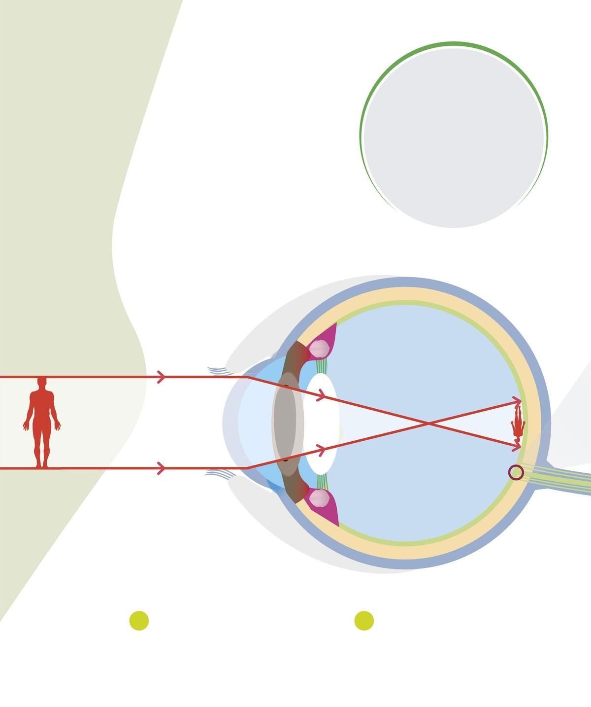
Mắt có lẽ là giác quan quan trọng nhất trong năm giác quan của chúng ta. Mắt thu thập ánh sáng phản xạ từ một vật và chuyển thông tin này đến não qua dây thần kinh thị giác.
Khi một chất kích thích trong mũi kích hoạt trung tâm điều khiển ở thân não, nó gây ra sự co cơ lan rộng, bao gồm cả cơ mí mắt. Điều đó khiến bạn chớp mắt trong chốc lát.
Cấu trúc của mắt
Nhãn cầu đường kính khoảng 1 in (2,5 cm). Ở phía sau mắt là võng mạc, chứa các tế bào nhạy sáng nối với dây thần kinh thị giác qua các nơ-ron. Khoảng bên trong nhãn cầu chứa đầy một chất dạng thạch. Phía trước mắt có một lỗ (đồng tử), phía sau là thủy tinh thể trong suốt. Quanh đồng tử là một vòng cơ có màu, gọi là mống mắt, điều khiển lượng ánh sáng đi vào mắt. Giác mạc, một màng trong suốt, phủ lên chúng và hòa vào màng ngoài màu trắng gọi là màng cứng.
Nhãn cầu được bao bọc bởi màng cứng
Các tia giao nhau tạo ra hình ảnh đảo ngược trên võng mạc
Các tia sáng bắt đầu khúc xạ (bẻ cong) khi đi từ không khí vào giác mạc
VÕNG MẠC
Thủy tinh thể giống như một túi thạch có thể đổi hình dạng để hỗ trợ hội tụ
Mống mắt là một vòng cơ
Nhìn thấy sự vật: Mắt có khả năng cung cấp cho não một lượng chi tiết khổng lồ về những gì nó đang nhìn. Tuy nhiên, hình ảnh não nhận được bị đảo ngược, nên phải được lật lại trước khi chúng ta có thể hiểu được.
Thủy tinh thể và sự hội tụ: Phía sau mống mắt là thủy tinh thể, nơi mà
2
đi vào mắt qua đồng tử. Đồng tử được bao quanh bởi một vòng cơ có màu — mống mắt — có thể làm đồng tử co lại hoặc giãn ra để thay đổi lượng ánh sáng đi vào.
các tia sáng bị bẻ cong để hình ảnh hình thành trên võng mạc. Thủy tinh thể nối với các cơ cho phép nó đổi hình dạng — nó dẹt lại khi nhìn vật ở xa và dày lên khi nhìn vật ở gần.
- TẠI SAO MẮT TÔI NHẮM LẠI KHI TÔI HẮT HƠI?
- ÁNH SÁNG
- GIÁC MẠC
- ĐỒNG TỬ
- ĐỒNG TỬ (PUPIL)
- MÀNG MẠCH
- MÀNG CỨNG
- Giác mạc là lớp trong suốt phủ trước mắt
- Màng mạch là lớp giàu mạch máu bao quanh võng mạc
- Ánh sáng đi vào mắt: Ánh sáng đi qua giác mạc và
- 1
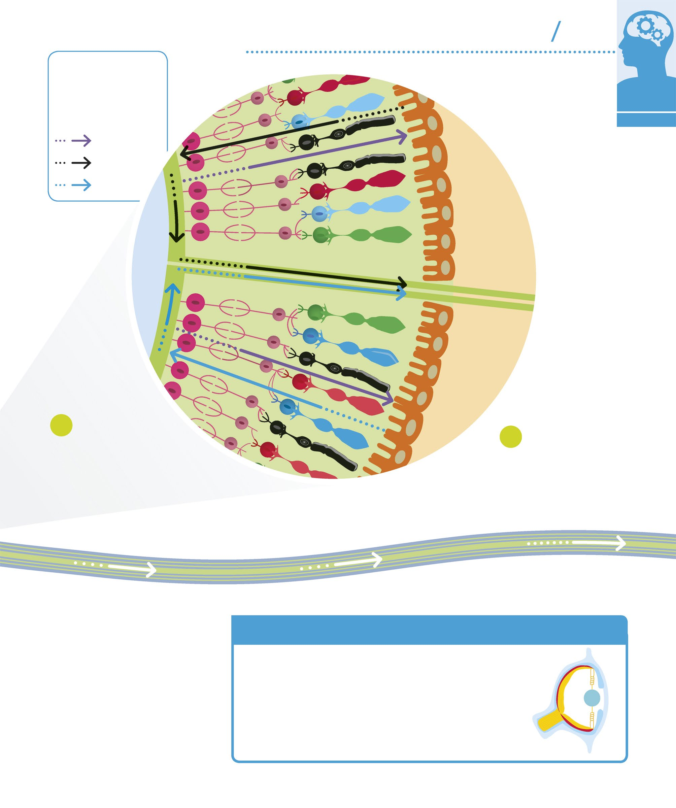
CHỨC NĂNG NÃO BỘ VÀ CÁC GIÁC QUAN
CHÚ THÍCH: Các mũi tên màu tím cho thấy hướng của tia sáng. Mũi tên màu đen và xanh dương là tín hiệu thần kinh đi tới dây thần kinh thị giác.
Tia sáng đi tới phía sau võng mạc
Các tế bào cần (rods) hoạt động theo thang xám, đáp ứng với cường độ ánh sáng; chúng giúp ta nhìn trong điều kiện thiếu sáng
Màu sắc
Các tế bào nón (cones) gửi tín hiệu thần kinh khi có ánh sáng xanh lá, đỏ hoặc xanh dương; chúng cần ánh sáng mạnh để tạo ra tín hiệu
Tín hiệu đen trắng đi từ võng mạc tới dây thần kinh thị giác
MÀNG MẠCH
Vách gồm các tế bào sắc tố tạo thành mặt sau của võng mạc
4
gồm ba lớp. Các tia sáng đi xuyên qua hai lớp đầu — tế bào hạch và tế bào lưỡng cực — rồi tới lớp thứ ba, nơi chứa các tế bào cần và nón nhạy sáng. Những tế bào này chuyển tia sáng thành tín hiệu thần kinh.
các xung ở tế bào hạch và tế bào lưỡng cực, vốn nối trực tiếp với dây thần kinh thị giác. Tín hiệu thần kinh sau đó đi dọc dây thần kinh thị giác đến não.
Dây thần kinh thị giác mang tín hiệu từ các cảm biến ánh sáng đến não
ĐIỂM MÙ
Để nối với não, các sợi thần kinh của võng mạc phải đi xuyên qua phía sau mắt để tạo thành dây thần kinh thị giác. Điều này tạo ra một “điểm mù” không có thụ thể quang học. Chúng ta không nhận ra điều đó vì mỗi mắt cung cấp dữ liệu về một cảnh, và não dùng thông tin từ mắt kia để hoàn thiện hình ảnh.
- VÕNG MẠC
- Các tia sáng
- Đen và trắng
- TẾ BÀO THẦN KINH
- TẾ BÀO THỤ QUẢNG
- Tế bào hạch
- DÂY THẦN KINH THỊ GIÁC
- Tín hiệu màu đi từ võng mạc tới dây thần kinh thị giác
- Tế bào lưỡng cực
- Võng mạc: Võng mạc được cấu tạo gồm
- 3
- Tín hiệu thần kinh đến não: Các tín hiệu thần kinh kích hoạt
- DÂY THẦN KINH
- Các tế bào cần và nón
- Điểm mù nơi các sợi thần kinh rời khỏi mắt
- MẮT NGƯỜI

3
Các đặc điểm gợi ý một khuôn mặt được gửi tới vùng nhận diện khuôn mặt và hạch hạnh nhân, nơi chúng được tìm kiếm những chi tiết gợi ra sự nhận diện.
Tín hiệu thần kinh từ mắt phải đi xuyên suốt não trước khi tới vùng chuyên giải mã thông tin này. Vùng đó được gọi là vỏ thị giác.
Nhân gối ngoài chuyển tiếp tín hiệu từ võng mạc tới vỏ thị giác
Cấu trúc của vỏ não
Vỏ thị giác hiện diện ở cả hai bán cầu não và được chia tiếp thành tám vùng chính, mỗi vùng có chức năng riêng (xem bảng ở trang đối diện). Tín hiệu đi từ võng mạc (xem tr.66–67) qua đồi thị và nhân gối ngoài tới vỏ thị giác chính (V1). Dữ liệu thô sau đó đi qua nhiều vùng thị giác khác nhau, bổ sung các chi tiết về hình dạng, màu sắc, độ sâu và chuyển động trước khi kết hợp thành một hình ảnh. Một số vùng cung cấp thông tin giúp nhận diện ngay lập tức vật quen thuộc, số khác hỗ trợ định hướng không gian hoặc kỹ năng thị giác-vận động.
DÂY THẦN KINH THỊ GIÁC
Tế bào cần và nón trong võng mạc chuyển ánh sáng thành tín hiệu thần kinh
CHÚ THÍCH
dây thần kinh thị giác cho tới khi tới giao thoa thị giác (xem bên dưới), nơi một phần dữ liệu được gửi sang phía đối diện của não. Sau đó tín hiệu đi tới nhân gối ngoài, vùng này chuyển dữ liệu tới vỏ thị giác để xử lý.
Nhân gối ngoài
Một nửa tín hiệu đi cùng bán cầu; nửa còn lại vượt sang bên kia
Nhìn vật từ mắt trái
Khả năng nhìn 3-D của chúng ta — gọi là thị giác lập thể — đến từ việc cả hai mắt cùng nhìn thẳng về phía trước và di chuyển đồng bộ. Vì hai mắt hơi tách nhau, mỗi mắt nhận một góc nhìn khác nhau, dù chúng chồng lên nhau một chút. Não tính toán thông tin không gian từ mỗi mắt để tạo ra một hình ảnh tổng thể, dùng kinh nghiệm trước đó để tăng tốc xử lý và lấp đầy các khoảng trống.
VỎ THỊ GIÁC PHẢI
Đổi bên: Tại điểm giao thoa gọi là giao thoa thị giác, các sợi trục thần kinh từ phía trái của mỗi võng mạc hợp lại và tiếp tục đi tới vỏ thị giác bên trái, tương tự như vậy với các sợi trục từ phía phải.
Các sợi trục thần kinh tách ra sau nhân gối ngoài và tỏa tới các vùng của vỏ thị giác
Các dây thần kinh thị giác hội tụ tại giao thoa thị giác
- Vỏ não
- THÙY TRÁN
- Thùy trán thực hiện nhận diện khuôn mặt có ý thức
- ĐỒI THỊ
- Hạch hạnh nhân xử lý biểu cảm khuôn mặt
- VỎ THỊ GIÁC
- HẠCH HẠNH NHÂN
- VÙNG NHẬN DIỆN KHUÔN MẶT
- Dây thần kinh thị giác mang tín hiệu thần kinh đến não
- Từ nhãn cầu tới vỏ thị giác: Dữ liệu từ nhãn cầu đi dọc theo
- 1
- Thông tin từ mắt
- Đường nhận diện khuôn mặt
- Thị giác lập thể (stereoscopic vision)
- BÁN CẦU TRÁI
- VỎ THỊ GIÁC TRÁI / ĐỒI THỊ
- Nhìn vật từ mắt phải
- BÁN CẦU
- PHẢI
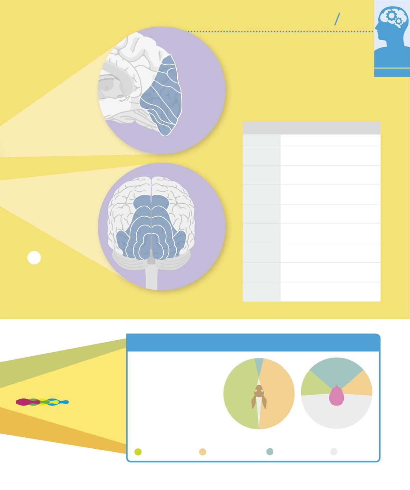
V2
Một số vùng xử lý thị giác cong quanh phía sau não, nằm trong rãnh giữa hai bán cầu
V1
Đáp ứng với các kích thích thị giác.
VÙNG BROCA
Chuyển tiếp thông tin và đáp ứng với các hình dạng phức tạp.
V3A, V3D, VP
Ghi nhận góc và tính đối xứng, đồng thời kết hợp chuyển động và hướng.
V3A V3
Đáp ứng với màu sắc, hướng, hình dạng và chuyển động.
V5
V4D
Phát hiện chuyển động ở ngoại vi của trường thị giác.
V1
qua các lớp khác nhau của vỏ não, mỗi lớp thêm thông tin vào hình ảnh. Phải mất nửa giây để hình ảnh được đánh giá và trở thành một tri giác có ý thức.
V7
Tham gia vào tri giác tính đối xứng.
V8
Có lẽ tham gia xử lý màu sắc.
CÁC TRƯỜNG THỊ GIÁC
Động vật như linh trưởng có trường thị giác lập thể rộng và đánh giá khoảng cách tốt hơn động vật ăn cỏ hay hầu hết chim. Tuy nhiên, chúng có một vùng mù phía sau chỉ nhìn được khi quay đầu. Động vật có mắt ở hai bên và đỉnh đầu có trường thị giác 2-D rộng hơn và nhận biết toàn cảnh tốt hơn.
Hình ảnh do não tạo ra sau khi kết hợp hình ảnh từ trường thị giác của mắt trái và mắt phải
- CHỨC NĂNG NÃO BỘ VÀ CÁC GIÁC QUAN
- Vỏ thị giác dưới
- V6
- V3A
- VỎ THỊ GIÁC RẤT MỎNG — CHỈ 0,08 IN (2 MM)
- V3D
- V2
- V1
- V4V
- CÁC VÙNG CỦA VỎ THỊ GIÁC
- V8
- VP
- CHỨC NĂNG
- VÙNG
- V7
- Vỏ thị giác, nằm ở thùy chẩm
- V4D, V4V
- Đáp ứng với chuyển động.
- Vỏ thị giác: Các tín hiệu thần kinh tiến triển
- 2
- TRƯỜNG THỊ GIÁC CỦA MẮT TRÁI
- TRƯỜNG THỊ GIÁC SONG MẮT
- THỎ
- CON NGƯỜI
- TRƯỜNG THỊ GIÁC CỦA MẮT PHẢI
- Trường thị giác song mắt
- Vùng mù
- Trường thị giác của mắt trái
- Trường thị giác của mắt phải
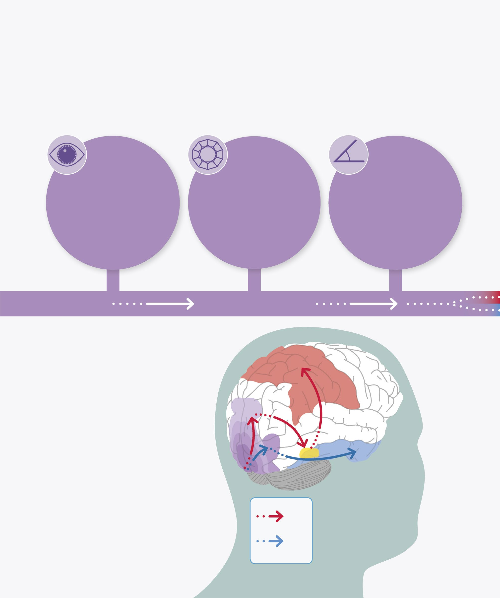
Nhìn là một hành động vừa có ý thức vừa không có ý thức. Mỗi loại đi theo đường riêng trong não. Đường có ý thức giúp nhận diện vật, còn đường không ý thức dẫn chuyển động.
Vùng tế bào V3
Tín hiệu từ mắt đầu tiên được nhận tại vỏ thị giác chính (V1). Các nơ-ron ở đây nhạy với tín hiệu thị giác cơ bản, gồm hướng và chiều chuyển động của vật, cùng khả năng nhận dạng mô hình.
Ở vỏ thị giác thứ hai (V2), một số nơ-ron cải thiện hình ảnh từ V1, làm sắc nét đường nét và cạnh của các hình dạng phức tạp. Nơ-ron khác tinh chỉnh cách diễn giải ban đầu về màu sắc của vật.
Vùng thị giác 3 (V3) tham gia phân tích góc, vị trí, độ sâu và hướng của hình dạng. Nó cũng giúp xử lý hướng và tốc độ của vật. Một số ít tế bào còn nhạy với màu sắc.
Đường thị giác tách ra sau vùng tế bào V3
Các thùy đỉnh đánh giá vị trí của vật so với người quan sát
Theo dõi đường dẫn
Khi thông tin thị giác được các lớp của vỏ thị giác xử lý (xem tr.68–69), nó tách thành hai đường gọi là đường trên, hay đường lưng (dorsal route), và đường dưới, hay đường bụng (ventral route). Vị trí chính xác của điểm tách vẫn còn chút bất định, nhưng đường lưng đảm nhận nhận thức không gian về vị trí của ta và cách ta di chuyển so với đồ vật quanh ta, trong khi đường bụng giúp ta nhận diện, phân loại và nhận ra những gì ta thấy. Đường lưng quan trọng trong việc đánh giá các tình huống đáng kể, đặc biệt khi cần hành động ngay để tránh nguy hiểm, chẳng hạn như né tránh một vật đang bay tới. Khi đó, đường bụng bị đưa vào vị trí thứ yếu vì thông tin nó mang theo không mang tính quyết định.
- Vùng tế bào V1
- Vùng tế bào V2
- ĐƯỜNG DẪN VỎ THỊ GIÁC
- V3
- V2
- V4
- V5
- V1
- Thùy thái dương dưới tham gia nhận diện vật
- CHÚ THÍCH
- Đường lưng
- Đường bụng

Thùy đỉnh: Thùy đỉnh
Vùng thái dương giữa (V5) đánh giá hướng chuyển động tổng thể của một vật thay vì hướng của từng bộ phận cấu thành. Ví dụ, nó xử lý hướng bay chung của cả bầy chim thay vì chuyển động của một con chim riêng lẻ. Nó cũng phân tích chuyển động của chính cơ thể ta.
đo độ sâu và vị trí của vật so với người quan sát. Điều này cho phép người đó hành động ngay lập tức, chẳng hạn như cúi né một vật đang lao tới nhanh chóng.
ĐƯỜNG “Ở ĐÂU” (ĐƯỜNG LƯNG)
Thị giác không ý thức: Đường lưng mang thông tin thị giác tới các thùy đỉnh, đi qua các vùng tính toán vị trí, thời điểm và chuyển động của vật, rồi lập kế hoạch tương ứng. Tất cả những điều này diễn ra mà không cần suy nghĩ có ý thức.
Thị giác có ý thức: Đường bụng bổ sung thêm thông tin cho vật, chẳng hạn như màu sắc và hình dạng. Thông tin đi tới thùy thái dương, nơi nó được đối chiếu với trí nhớ thị giác để hỗ trợ nhận diện. Đây là nơi kích thích thị giác trở thành một tri giác có ý thức.
Đây là tình trạng không nhận diện được khuôn mặt, kể cả người thân trong gia đình, thường do tổn thương thùy thái dương dưới. Người mắc phải phải học cách nhận ra người khác bằng những cách khác.
Vùng thị giác 4 (V4) tham gia tri giác màu sắc, kết cấu, hướng, hình dạng và chuyển động. Vùng này chứa phần lớn các nơ-ron cảm nhận màu và quan trọng trong việc diễn giải không gian giữa các vật.
Tín hiệu được chuyển tiếp tới hồi fusiform của thùy thái dương dưới, vùng tham gia nhận diện hình dạng phức tạp, vật thể và khuôn mặt. Cùng với hải mã, vùng này hỗ trợ hình thành trí nhớ mới.
- CHỨC NĂNG NÃO BỘ VÀ CÁC GIÁC QUAN
- Vùng tế bào V5
- ĐƯỜNG “LÀ GÌ” (ĐƯỜNG BỤNG)
- CHỨNG MẶT MÙ
- LÀ GÌ?
- Vùng tế bào V4
- Thùy thái dương dưới

Não bị khuôn mặt thu hút đến mức cả những bức tranh cũng được nghiên cứu kỹ
Vì việc xử lý thị giác diễn ra trong microgiây, không có gì đáng ngạc nhiên khi đôi khi não ta gặp khó trong việc hiểu thông tin do mắt gửi tới, khiến ta nghi ngờ những gì mình nhìn thấy.
Xử lý một cảnh
Các lối mở được quét qua, có thể để đề phòng kẻ xâm nhập
Khi nhìn một cảnh, chúng ta thực sự không tiếp nhận toàn bộ nó. Thay vào đó, mắt liên tục quét qua một chuỗi vùng nhỏ cỡ ảnh thu nhỏ mà não coi là điểm đáng chú ý. Phần còn lại của cảnh bị mờ đi cho đến khi sự chú ý chuyển sang một vùng mới. Khuôn mặt thường là tiêu điểm chính của một cảnh — não được lập trình để tìm kiếm khuôn mặt, vì thế ta có xu hướng thấy chúng ở những nơi ít ngờ nhất, chẳng hạn như vết cháy trên một lát bánh mì nướng. Trong khi các chi tiết của vật mục tiêu đang được xem xét kỹ, não có ý thức dựng nên câu chuyện của cảnh, hoàn chỉnh với ngữ cảnh của từng vật.
Việc chỉ tay thu hút sự chú ý vào một vật và khiến nó đáng được nhìn
Mắt lướt thẳng qua sàn nhà, tạm dừng rất ngắn ở một chướng ngại tiềm ẩn, nhưng không đủ lâu để nhìn rõ nó
Quét tìm chi tiết: Nhìn vào một bức tranh phức tạp, chẳng hạn như cảnh quán cà phê này, kích hoạt các quá trình phân biệt vật mục tiêu, như con người, với nền, sau đó chọn những phần của mục tiêu để tập trung vào.
Não tìm kiếm dấu hiệu về mối quan hệ bằng cách nhìn từng khuôn mặt riêng lẻ và sự tương tác giữa các nhân vật
Hiện tượng nhìn khuôn mặt ở vật vô hồn (pareidolia) — thấy mặt người ở nơi vốn không có — có thể là một bản năng sinh tồn, đảm bảo ta luôn cảnh giác với những nét thù địch của kẻ thù hoặc thú săn mồi.
- TẠI SAO CHÚNG TA THẤY KHUÔN MẶT TRONG
- VẬT VÔ HỒN?
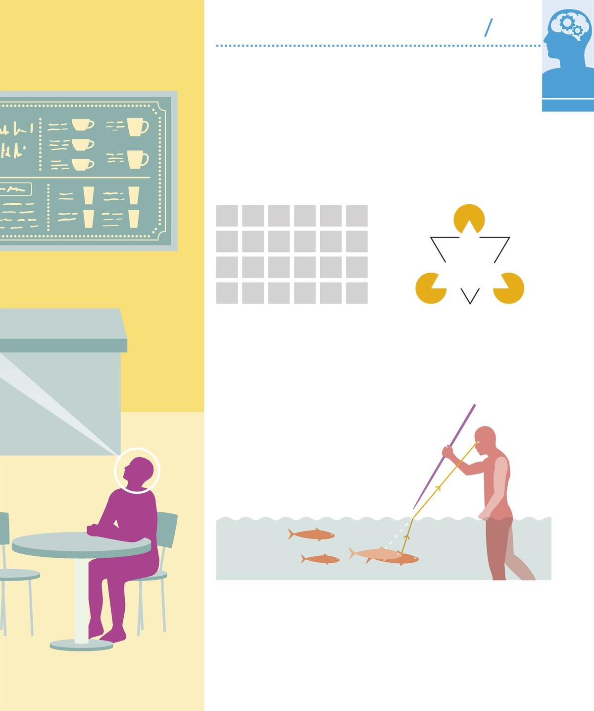
Ảo giác
Ảo giác xảy ra khi những gì mắt thấy được não diễn giải theo cách không khớp với thực tế vật lý của hình ảnh thật. Với quá nhiều tín hiệu cạnh tranh gửi tới não, não có xu hướng tìm kiếm các mô hình quen thuộc. Nó cũng cố dự đoán điều sẽ xảy ra tiếp theo để bù cho độ trễ nhỏ giữa kích thích và tri giác. Cả hai yếu tố này đều có thể khiến não hiểu sai kích thích thị giác. Ảo giác chia thành ba loại chính: sinh lý, nhận thức và vật lý.
TAM GIÁC KANIZSA’S
Ảo giác sinh lý: Ảo giác sinh lý được cho là phát sinh từ kích thích quá mức hoặc cạnh tranh, chẳng hạn như độ sáng, màu sắc, chuyển động và vị trí. Trong lưới này, các đốm xám dường như xuất hiện tại các điểm giao khi mắt bạn lướt qua, nhưng biến mất khi bạn nhìn chăm chú.
Ảo giác nhận thức: Ảo giác nhận thức xảy ra khi não đưa ra giả định về chuyển động hoặc góc nhìn khi quan sát một vật. Đôi khi điều này khiến não chuyển đổi giữa hai hình ảnh khác nhau hoặc thấy một hình dạng không hề tồn tại.
Ánh sáng bị khúc xạ khi rời khỏi nước
Não hướng mắt tới những phần của cảnh mà nó cho là quan trọng — đặc biệt là khuôn mặt
Ảo giác vật lý: Ảo giác vật lý do đặc tính quang học của môi trường vật lý gây ra, đặc biệt là nước. Não không thể tính đến cách ánh sáng bị bẻ cong khi đi qua giữa nước và không khí, nên nó thấy con cá ở vị trí xa hơn so với thực tế.
- CHỨC NĂNG NÃO BỘ VÀ CÁC GIÁC QUAN
- LƯỚI HERMANN
- Chúng ta đi theo hướng nhìn của mắt người khác
- Vị trí biểu kiến của con cá
- Vị trí thực của con cá
- SỰ KHÚC XẠ
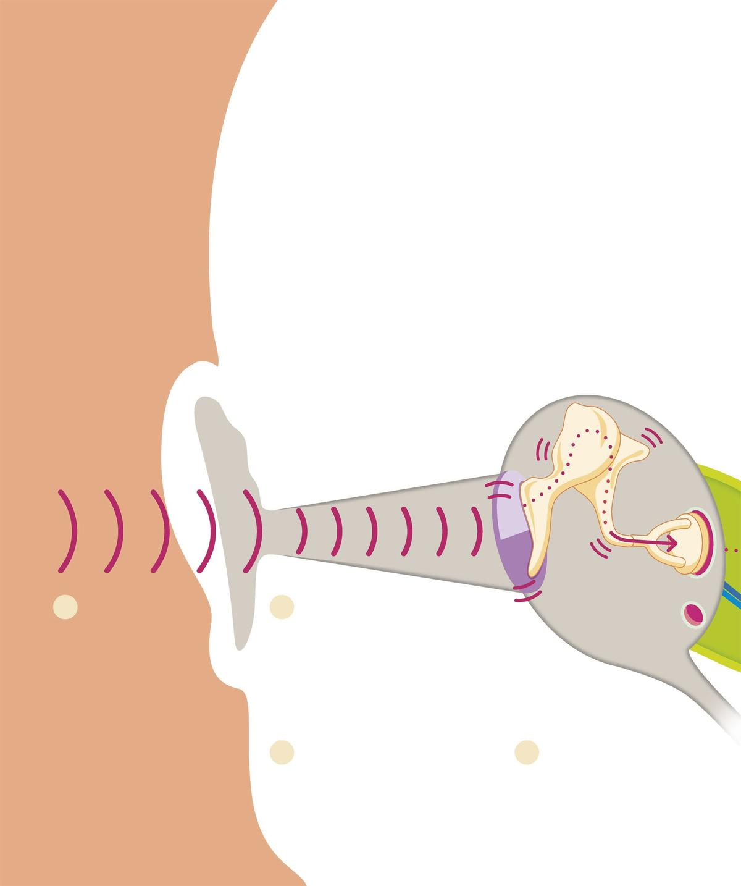
Thế giới đầy tiếng ồn. Âm thanh truyền đi dưới dạng sóng âm qua không khí cho tới khi tới tai ta. Tại đây, sóng âm được biến thành xung điện và gửi tới não để giải mã thành những âm thanh có ý nghĩa.
Thu nhận âm thanh
Thính giác liên quan đến việc chuyển sóng âm thành xung điện mà não có thể diễn giải. Sóng âm được dẫn từ tai ngoài tới tai giữa, nơi chúng làm một chuỗi xương và màng rung lên. Các dao động này sau đó tới ốc tai, nơi chúng trở thành xung điện. Những xung này truyền tới thân não và đồi thị, nơi hướng, tần số và cường độ được nhận biết. Dữ liệu rồi được gửi đi để vỏ thính giác ở hai bên trái và phải xử lý. Bên trái xác định âm thanh và gán ý nghĩa cho nó, trong khi bên phải đánh giá chất lượng của âm thanh.
2
Cửa sổ bầu dục bởi tai ngoài, vùng dẫn chúng vào bên trong đầu qua ống tai.
ống tai tới màng nhĩ. Ống tai được lót bằng những sợi lông nhỏ lọc ra dị vật.
4
màng nhĩ, là một lớp mỏng gồm mô xơ tạo thành ranh giới giữa tai ngoài và tai giữa. Nó rung lên khi sóng âm đi dọc ống tai va vào.
từ màng nhĩ tới một nhóm xương nối với nhau gọi là các xương tai — xương búa, xương đê và xương bàn đạp. Xương bàn đạp đẩy và kéo một màng khác gọi là cửa sổ bầu dục. Điều này truyền âm thanh tới tai trong.
- TAI NGOÀI
- Dao động làm các xương va vào nhau
- XƯƠNG BÚA (MALLEUS)
- Sóng âm truyền qua không khí
- Sóng âm làm rung màng nhĩ
- XƯƠNG ĐÊ (INCUS)
- ỐNG TAI
- CÁC XƯƠNG TAI
- (CÁC XƯƠNG TAI GIỮA)
- MÀNG NHĨ
- XƯƠNG BẦN ĐẸP (STAPES)
- Tai ngoài: Sóng âm được thu nhận
- Ống tai: Sóng âm đi dọc theo
- 1
- TAI GIỮA
- Cửa sổ tròn
- Ống Eustache nối tai giữa với mũi và miệng
- Màng nhĩ: Màng nhĩ, hay màng tympanic
- Các xương tai: Dao động được truyền qua
- 3
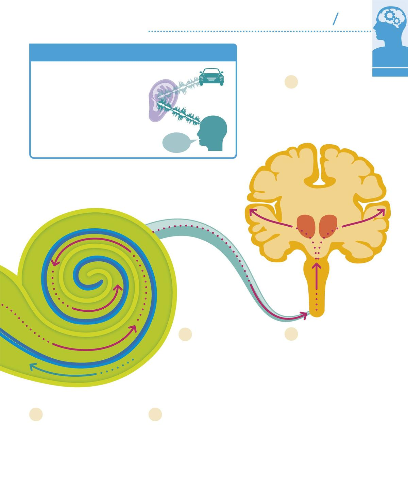
LỌC BỎ TIẾNG ỒN
Trên một phố đông, có rất nhiều âm thanh chồng chéo, nhưng bạn vẫn nghe được người bên cạnh nói chuyện. Đó là vì vỏ thính giác chính có thể lọc bỏ âm thanh không cần thiết và tăng cường tín hiệu nó muốn nghe. Nó làm vậy bằng cách làm suy giảm phản ứng với âm thanh liên tục, chẳng hạn như tiếng xe cộ, đồng thời tăng cường các âm thanh biến đổi hơn, như lời nói, và chủ động lắng nghe chúng.
9
Sau khi xử lý trung gian tại đồi thị, đặc điểm của từng âm thanh được vỏ thính giác chính diễn giải; vùng này phối hợp với các vùng vỏ não khác để xác định loại âm thanh.
Tiếng ồn nền bị lọc bỏ
Cơ quan Corti (phần xoắn ốc trung tâm của ốc tai) nằm trên màng đáy và chứa các tế bào lông nhạy cảm
NÃO BỘ
Các tế bào chuyên biệt ở đỉnh thân não giúp xác định hướng của âm thanh
7
thân não. Từ đây, chúng đi lên tới các nơ-ron chuyên biệt ở đồi thị để xử lý. Sau đó các tín hiệu này được gửi tới vỏ thính giác chính, vùng cũng gửi thông tin ngược trở lại đồi thị.
được vận chuyển từ mỗi tế bào lông qua các đầu dây thần kinh ốc tai hợp lại thành dây thần kinh ốc tai. Dây này có nhiệm vụ truyền tín hiệu tới các nhóm nơ-ron chuyên biệt ở thân não.
6
màng đáy làm cong các tế bào lông nhạy cảm trong cơ quan Corti (xem tr.76), đây là cơ quan thính giác chính. Các tế bào lông chuyển chuyển động này thành tín hiệu điện.
chứa dịch. Dao động truyền dọc ống tiền đình dưới dạng chuyển động sóng, được truyền sang màng đáy của cơ quan Corti. Dao động dư quay trở lại dọc ống nhĩ tới cửa sổ tròn.
- CHỨC NĂNG NÃO BỘ VÀ CÁC GIÁC QUAN
- Vỏ thính giác chính
- Vỏ thính giác chính xử lý âm thanh
- ỐC TAI
- DÂY THẦN KINH ỐC TAI
- ĐỒI THỊ
- Tín hiệu điện đi dọc dây thần kinh ốc tai
- THÂN NÃO
- Ống tiền đình dẫn dao động âm thanh
- Ống nhĩ và ống tiền đình
- ỐNG
- Đồi thị: Tín hiệu đầu tiên được nhận tại
- Dây thần kinh ốc tai: Các tín hiệu điện được
- 8
- CƠ QUAN CORTI
- Dao động quay trở lại cửa sổ tròn
- CỬA SỔ TRÒN
- TAI TRONG
- Cơ quan Corti: Chuyển động của
- Ốc tai: Ốc tai chứa ba ống chứa dịch-
- 5

Mỗi âm thanh được tạo thành từ một số thành phần khác nhau. Não bộ phải tiếp nhận mọi chi tiết về tần số, cường độ và nhịp điệu của âm thanh để xử lý, nhận diện và ghi nhớ nó.
VỎ NÃO THÍNH GIÁC CHÍNH
Vỏ não thính giác (auditory cortex) Vỏ não thính giác là trung tâm xử lý chính của âm thanh. Nó nằm ở thùy thái dương, ngay dưới thái dương ở hai bên đầu.
Nhận tín hiệu từ các âm thanh tần số cao
Vỏ não thính giác chính xác định tần số và cường độ của âm thanh
Vỏ não thính giác thứ cấp giải mã các âm thanh phức tạp, chẳng hạn như ngôn ngữ
Các tế bào lông bị xáo động khi màng đáy (basilar membrane) rung
Cơ quan Corti là cơ quan chính của thính giác
Vỏ não thính giác bậc ba tích hợp thính giác với các hệ cảm giác khác
Bên trong vỏ não thính giác
Tín hiệu từ đồi thị (xem tr.75) được gửi đến vỏ não thính giác chính, vùng được chia thành các phần đáp ứng với một dải tần số. Một số phần tập trung vào cường độ thay vì tần số, trong khi những phần khác bắt lấy các âm thanh phức tạp và đặc biệt hơn, chẳng hạn như tiếng còi, tiếng nổ hoặc tiếng động vật. Sau đó, tín hiệu truyền đến vỏ não thính giác thứ cấp, được cho là tập trung vào hòa âm, nhịp điệu và giai điệu. Vỏ não thính giác bậc ba tích hợp tất cả tín hiệu để tạo ra ấn tượng tổng thể về các âm thanh mà tai thu nhận được.
Hàng tế bào lông
Ốc tai (cochlea) Các vùng dọc theo khúc xoắn của ốc tai đáp ứng với các tần số âm thanh khác nhau, từ âm cao ở đỉnh đến âm trầm thấp ở đáy. Chúng được phản chiếu bởi các vùng tương ứng trong vỏ não thính giác.
- Vùng này nhận tín hiệu từ các âm thanh tần số thấp
- Tương ứng với đỉnh của ốc tai
- Tương ứng với đáy của ốc tai
- VỎ NÃO THÍNH GIÁC
- Phần mềm dẻo hơn của màng đáy rung dễ hơn
- Đáy của ốc tai truyền các âm thanh tần số thấp
- 1.000 Hz
- 500 Hz
- Màng đáy
- 2.000 Hz
- Đỉnh của ốc tai truyền các âm thanh tần số cao
- 4.000 Hz
- ỐC TAI
- 16.000 Hz
- 8.000 Hz

Âm nhạc và não bộ
Lập bản đồ âm nhạc Các bản quét cho thấy một số vùng của não hoạt động khi nghe nhạc, và thậm chí nhiều vùng hơn được huy động khi bạn chơi nhạc cụ hoặc nhảy múa.
Âm nhạc huy động nhiều vùng của não bộ. Ngoài việc xử lý âm thanh, nghe nhạc còn kích hoạt các trung tâm trí nhớ và cảm xúc trong não, trong khi việc nhớ lại lời bài hát liên quan đến các trung tâm ngôn ngữ. Biểu diễn âm nhạc đòi hỏi còn cao hơn: vỏ não thị giác (visual cortex) được kích thích khi đọc nhạc, thùy trán tham gia vào việc lập kế hoạch hành động, và vỏ não vận động (motor cortex) điều phối chuyển động. Người ta biết rằng nhạc sĩ có khả năng dùng cả hai tay tốt hơn vì âm nhạc đòi hỏi sự phối hợp giữa kiểm soát vận động, xúc giác cảm giác cơ thể và thông tin thính giác. Khác với người nghe — những người xử lý âm nhạc ở bán cầu não phải — nhạc sĩ chuyên nghiệp dùng bán cầu trái. Họ cũng có thể chai (corpus callosum) dày hơn (vùng nối hai bán cầu) và có xu hướng có vỏ não thính giác và vỏ não vận động lớn hơn.
Kết nối các bán cầu của não
Hạch hạnh nhân (amygdala) (màu cam) và hạt nhân đệm (nucleus accumbens) (màu đỏ sậm) đều tham gia vào các phản ứng cảm xúc với âm nhạc
SỐ SỢI TẠO NÊN DÂY THẦN KINH THÍNH GIÁC
Tham gia vào chuyển động và phản ứng cảm xúc với âm nhạc
ÂM CAO VÀ ÂM THẤP
Con người có thể phát hiện được một dải tần số khá rộng, nhưng nhiều loài động vật có thể nghe được những âm vượt xa giới hạn của chúng ta. Các loài như dơi và cá heo dùng tần số cao trong định vị bằng tiếng vang (echolocation), trong khi voi và cá voi tạo ra những tiếng gầm thấp có thể truyền đi xa. Con người nhạy nhất với các tần số từ 2 kHz đến 5 kHz, vốn không cần cường độ lớn để nghe thấy. Người trẻ có dải thính giác tốt nhất, từ 20 Hz đến 20 kHz, nhưng tần số cao dần bị mất theo tuổi tác, ở người lớn tuổi giới hạn chỉ còn khoảng 15 kHz.
- CHỨC NĂNG NÃO VÀ CÁC GIÁC QUAN
- Xử lý cảm giác xúc giác khi nhảy múa hoặc chơi nhạc cụ
- Điều phối chuyển động khi nhảy múa hoặc chơi nhạc cụ
- Đặt âm thanh vào bối cảnh của ký ức và kinh nghiệm
- VỎ NÃO VẬN ĐỘNG
- Vỏ não cảm giác
- Vỏ não trước trán
- Thể chai
- VỎ NÃO THỊ GIÁC
- Vỏ não thính giác
- HẢI MÃ
- Tham gia vào việc lập kế hoạch và kiểm soát biểu đạt
- 30.000
- TIỂU NÃO
- Được kích hoạt khi đọc nhạc hoặc xem múa
- VOI 5 Hz–12 kHz
- DẢI THÍNH GIÁC TẦN SỐ CON NGƯỜI
- DƠI 2 kHz–120 kHz
- CHUỘT 1 kHz–100 kHz
- 10 Hz CON NGƯỜI 20 Hz–20 kHz 0
- CHÓ 64 Hz–44 kHz
- CÁ HEO 75 Hz–150 kHz
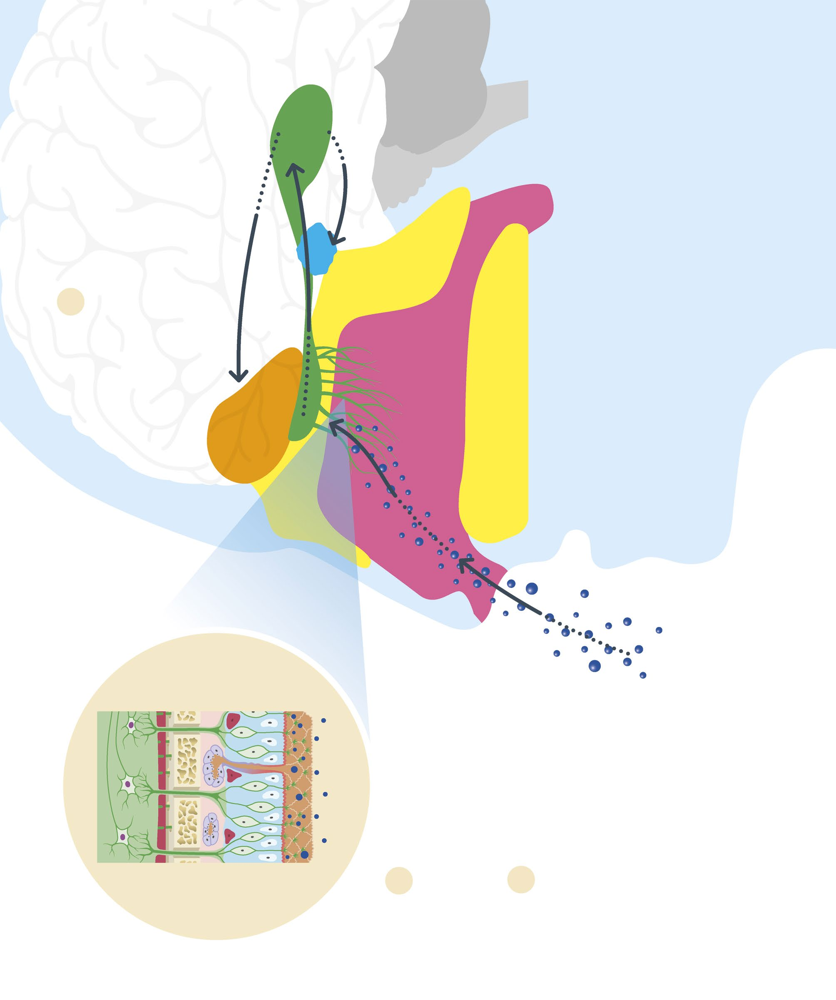
Vỏ não khứu giác tiếp tục xử lý các tín hiệu do hành khứu giác gửi đến
Hạch hạnh nhân gửi thông báo cảnh báo nếu mùi có liên quan đến các cấu trúc gọi là lông mao (cilia) gắn với tế bào thụ thể. Các tế bào này thuộc não trước, tạo thành một phần của hệ viền não. Dữ liệu sau đó được gửi đến nhiều vùng khác nhau của não, đặc biệt là vỏ não khứu giác.
Tín hiệu sau đó truyền dọc theo đường khứu giác đến vỏ não khứu giác. Vỏ não này nằm trong hệ viền não, vốn chịu trách nhiệm về cảm xúc và trí nhớ. Tín hiệu cũng được gửi đến hạch hạnh nhân và vỏ não hốc mắt trán.
phủ lên một lớp tế bào thần kinh và tế bào đệm gọi là biểu mô khứu giác
VỎ NÃO KHỨU GIÁC
các tế bào thụ thể trong khoang mũi, gây ra phản xạ hít sâu hơn. Trong khoang mũi, các mùi hòa tan trong chất nhầy do biểu mô khứu giác tiết ra. Các phân tử lan qua chất nhầy đến những cấu trúc giống sợi tóc. Khi chúng ta hít vào, các phân tử mùi trôi vào mũi và kích hoạt với nguy hiểm
HẠCH HẠNH NHÂN
Đường khứu giác, một bó dây thần kinh dẫn tín hiệu từ hành khứu giác đến vỏ não khứu giác
3
sợi trục thần kinh phát hiện mùi và gửi thông tin đến Tế bào thụ thể thần kinh
HÀNH KHỨU GIÁC
Vỏ não hốc mắt trán tham gia vào việc ra quyết định, cảm xúc, cũng như xử lý mùi
KHOANG MŨI
Hành khứu giác xử lý tín hiệu trước khi chuyển đến vỏ não khứu giác
Tuyến nhầy
Xương Màng cứng làm tăng mùi hương. Các phân tử hòa tan trong chất nhầy do biểu mô khứu giác tiết ra và được làm ấm khi đi qua mũi
Lông mao
Mỗi phân tử mùi kích hoạt một tổ hợp riêng của các thụ thể khứu giác. Các tế bào thụ thể được kích hoạt gửi xung động đi lên qua các sợi trục thần kinh đến tế bào
Các phân tử mùi được hút lên kích thích các lông mao nối với
Mùi đi vào mũi
hành khứu giác để xử lý.
Hành khứu giác
Biểu mô khứu giác các tế bào thụ thể.
- Bên trong não bộ
- Đón bắt mùi hương
- VỎ NÃO HỐC MẮT TRÁN
- hành khứu giác
- VỎ NÃO
- Thụ thể
- 12 TRIỆU
- Phân tử mùi hòa tan trong chất nhầy
- Các phân tử mùi trong không khí đi vào lỗ mũi
- Thụ thể khứu giác
- 1
- Sợi trục thần kinh
- Tế bào đệm Chất nhầy
- 2
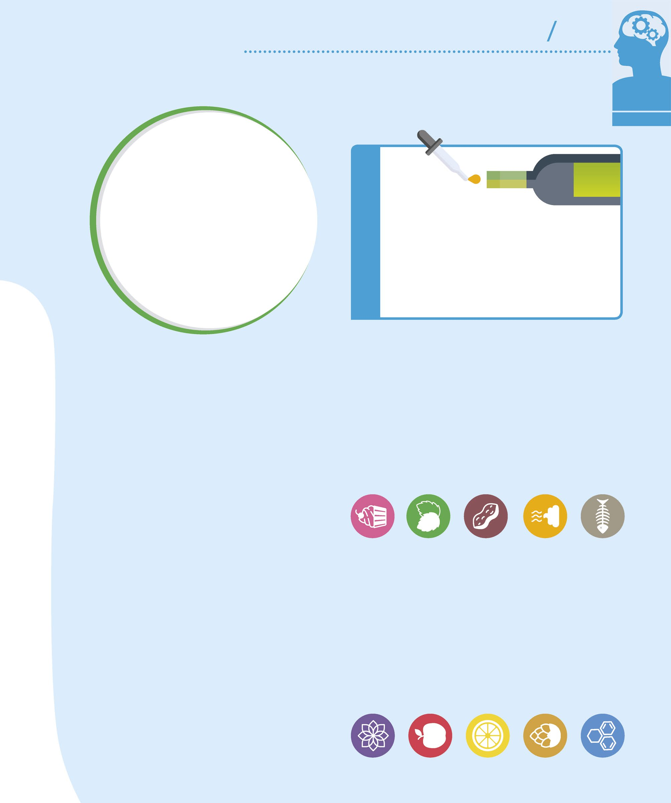
bỏ qua đồi thị và đi thẳng đến hệ viền não. Cảm xúc và ký ức được xử lý và lưu trữ tại đây, đặc biệt ở hạch hạnh nhân.
HÔI HAY NGỌT?
Một làn hương thoảng ra từ hóa chất thô — đây là một hợp chất có mùi rất nồng. Dimethyl sulphide (DMS) có thể khiến bạn tự hỏi liệu có thứ gì đang thối rữa hay có một loại phô mai nồng mùi trong phòng hay không.
Tuy nhiên, các nhà hóa học hương vị lại thấy nó hữu ích trong việc tạo ra đủ loại mùi vị. Nó được dùng trong thịt, hải sản, sữa, trứng, rượu vang, bia, và các hương liệu rau củ, trái cây, nồng độ.
thường ở nồng độ cực nhỏ
Ngoài mùi nồng còn có mùi của thức ăn thối rữa, nước thải, khí hộ gia đình và các chất “gây buồn nôn” khác.
Hơi cháy và caramen, với sắc thái ấm và béo, chẳng hạn như bắp rang bơ và bơ hạt lạc.
Thường thì các mùi khó chịu như phân hoặc sữa chua, cũng như hành tây,
Mát, tươi mới và sảng khoái, tiêu biểu là bạc hà, bạch đàn,
Ấm áp, đậm đà, ngọt ngào với chút béo ngậy, bao gồm sô-cô-la, mạch nha và vani.
việc nhận diện một mùi trong vô số mùi quanh ta liên quan đến hệ khứu giác, hệ thống cô lập
các hóa chất khác nhau rồi chuyển tín hiệu đến não để xác định chúng “tốt” hay “xấu”.
Cách chúng ta nhận diện mùi vẫn còn là chủ đề tranh luận. Nghiên cứu cho rằng hầu hết mùi thuộc 10 nhóm — hay mùi chính — mỗi nhóm báo hiệu một điều gì đó trong môi trường. Hầu hết mùi được tạo thành
MÙI NƯỚNG VÀ HẠT
tỏi và dưa muối.
và long não.
từ sự kết hợp của các nhóm này. Khứu giác là một phần then chốt của sự sinh tồn,
NGỌT
cho chúng ta biết liệu một thứ có an toàn hay nguy hiểm.
Bao gồm mùi tổng hợp, dược phẩm, dung môi,
Thường gồm trái cây chín và các mùi tươi khác có cảm giác êm dịu, mượt mà khi ngửi.
và mùi xăng dễ nhận ra
Khác với các loại trái cây khác, cam quýt có hương thơm tươi mát, sạch sẽ và chua nhẹ
Mùi nhẹ nhàng, tự nhiên như hoa, cỏ và thảo mộc, thường được dùng trong nước hoa.
Mùi đất tự nhiên như phân chuồng hoai mục, nấm, gia vị, và mùi gỗ nhựa như tuyết tùng, thông, và nấm mốc.
KHỨU GIÁC
- CHỨC NĂNG NÃO VÀ CÁC GIÁC QUAN
- Khác với các giác quan khác của chúng ta, mùi hương
- TẠI SAO MÙI HƯƠNG GỢI NHỚ KÝ ỨC?
- THỐI RỮA
- NỒNG HẮC
- BẠC HÀ
- với chút ngọt ngào.
- ĐIỀU GÌ TẠO NÊN MÙI HƯƠNG?
- có thể nhận diện được.
- HÓA CHẤT
- THƠM LỪNG
- TRÁI CÂY
- CAM QUÝT

Năm vị cơ bản Vị giác là một sự thích nghi tiến hóa để sinh tồn. Việc có thể xác định liệu một thứ có dinh dưỡng hay có thể độc hại trước khi đưa vào cơ thể là vô cùng quan trọng. Cho đến nay, chỉ năm vị cơ bản đã được phát hiện, dù có thể còn những vị khác.
Cung cấp năng lượng cho cơ thể đòi hỏi việc nạp vào các loại thực phẩm và chất lỏng bổ dưỡng. Việc chọn lựa những gì an toàn để ăn chịu ảnh hưởng lớn từ vị giác và khứu giác của chúng ta.
Ngọt
Báo hiệu sự hiện diện của carbohydrate, vốn là nguồn cung cấp đường thiết yếu.
Thực ra vị giác là một giác quan hạn chế; chỉ có năm vị cơ bản có thể được phát hiện (xem bên phải). Giống như khứu giác, vị giác là một giác quan hóa học. Các chất hóa học trong thức ăn được chổi vị (taste buds) bắt lấy, chủ yếu nằm trên lưỡi. Các tế bào thụ thể, nằm trong cấu trúc gọi là vi nhung mao (microvilli) bên trong chổi vị, phát hiện các chất hóa học này và gửi tín hiệu đến não để xử lý.
Mặn
Phát hiện các muối khoáng và khoáng chất hóa học cần thiết cho cơ thể.
Chua
Cảnh báo về thực phẩm có thể chưa chín hoặc đang hư hỏng.
Đắng
cơ linh hoạt. Nó được dùng để đẩy thức ăn quanh miệng và để nói. Bề mặt trên của lưỡi phủ đầy các gai nhỏ gọi là nhúm (papillae). Hầu hết các nhúm là cấu trúc dạng sợi, hay hình chỉ, và không chứa chổi vị. Chúng giúp giữ và mòn thức ăn trong khi nhai.
Chất độc và các độc tố khác thường có vị đắng hoặc khó ăn.
Vị umami
Phát hiện các muối glutamate và acid amin, có trong thịt, phô mai và các thực phẩm ủ chín hoặc lên men khác.
Nhúm có rãnh
Vi nhung mao chứa protein thụ thể, liên kết với các hóa chất trong thức ăn
4
lưỡi còn có nhúm hình nấm (fungiform), nhúm hình lá (foliate) và nhúm có rãnh (circumvallate), tất cả đều chứa chổi vị. Hầu hết chổi vị nằm ở các nhúm hình lá trên mặt sau và hai bên lưỡi.
tế bào xếp chùm lại với nhau như các múi trong một quả cam. Chúng nằm ở thành của các nhúm. Một đầu của mỗi tế bào nhô ra khỏi chổi, nơi nó được nước bọt chứa các phân tử thức ăn rửa trôi.
chúng tương tác với các protein thụ thể hoặc các protein giống lỗ gọi là kênh ion. Điều này gây ra những thay đổi điện trong tế bào, khiến các nơ-ron ở đáy tế bào gửi tín hiệu đến não.
- Nhận biết vị
- Lưỡi Lưỡi là một cơ khỏe,
- 1
- Sợi thần kinh
- Bề mặt lưỡi
- Lỗ chổi vị
- Phân tử thức ăn
- Nhúm dạng sợi
- Chổi vị
- Tế bào thần kinh
- Tế bào thụ thể vị giác
- Tế bào đệm
- Nhúm Ngoài các nhúm dạng sợi, lưỡi còn có
- Chổi vị Chổi vị là tập hợp của 50–100
- Tế bào chổi vị Khi các phân tử thức ăn chạm vào tế bào,
- 2
- 3

Tín hiệu truyền đến vùng vị giác thứ cấp, nằm ở vỏ não hốc mắt trán
VỎ NÃO HỐC MẮT TRÁN
Vùng vị giác chính, nằm ở hải đảo (insula) vùng lưỡi của vỏ não cảm giác cơ thể
Vị giác và khứu giác
Việc nhận biết hương vị phụ thuộc vào mũi cũng nhiều như vào chổi vị. Mũi bắt lấy mùi bên ngoài từ thức ăn (xem tr.78–79), nhưng điều này tăng lên đáng kể nhờ mùi của các hạt thức ăn được đưa ngược lên khoang mũi bởi khí thở ra từ phổi (khứu giác ngược dòng, retronasal olfaction). Một số thụ thể khứu giác cũng được tìm thấy trong chổi vị. Não kết hợp thông tin từ mũi và chổi vị để cảm nhận tất cả hương vị khác nhau trong thức ăn. Đây không phải là những cảm giác duy nhất góp phần vào trải nghiệm vị giác — vỏ não cảm giác cơ thể phát hiện kết cấu và nhiệt độ của thức ăn, thêm bối cảnh cho hương vị.
Tín hiệu từ vỏ não khứu giác được gửi đến vỏ não hốc mắt trán
KHOANG MŨI
Hạch hạnh nhân gán giá trị tích cực hoặc tiêu cực cho vị và mùi
TỦY HÀNH
Mùi từ các hạt thức ăn đã nuốt được gửi đến hành khứu giác để xử lý
Đường dẫn vị giác Thông tin từ chổi vị truyền đến não qua các dây thần kinh sọ ở hàm và cổ họng. Các xung động đi lên thân não đến đồi thị, rồi được chuyển tiếp đến các vùng vị giác của vỏ não trán và hải đảo, một nếp gấp của vỏ não sâu trong não.
Hạt thức ăn
Dây thần kinh sinh ba và dây thần kinh lưỡi hầu mang tín hiệu đến tủy hành trong thân não
Khí thở ra từ phổi đẩy các hạt thức ăn từ miệng vào khoang mũi
Trẻ sơ sinh có nhiều chổi vị hơn người lớn nên cảm nhận vị đắng mạnh hơn. Chúng bản năng từ chối những thực phẩm không ngọt hoặc béo như sữa mẹ.
- S
- ĐỒI THỊ
- Vỏ não khứu giác
- HÀNH KHỨU GIÁC
- HẠCH HẠNH NHÂN
- CHÚ GIẢI
- Tín hiệu vị giác
- Mùi ngược dòng
- Khí thở ra

LỚP ĐÁY
Mạng lưới các đầu sợi thần kinh quấn quanh gốc của thân lông
Chuyển động của lông kích hoạt xung thần kinh
Các ranh giới rõ ràng giúp đĩa Merkel nhạy với hình dạng và cạnh
Các đầu dây thần kinh tự do vươn vào lớp bề mặt của da
Đám rối lông (root hair plexus) Các dây thần kinh quấn quanh gốc thân lông được kích hoạt bởi những thứ chưa chạm vào da, chẳng hạn như luồng không khí hoặc vật thể lướt qua lông.
Đầu dây thần kinh tự do Vươn lên tới lớp gai của biểu bì, những đầu dây thần kinh trần trụi, giống như rễ này nhạy với lạnh, nóng, chạm nhẹ và đau.
Đĩa Merkel Nằm thấp hơn một chút so với các đầu dây thần kinh tự do, đĩa Merkel đặc biệt dày đặc ở môi và đầu ngón tay. Chúng đáp ứng với cú chạm nhẹ.
CÁC LOẠI THỤ THỂ CHỨC NĂNG
Các thụ thể cảm giác đáp ứng với áp lực hoặc biến dạng cơ học. Có thể là từ cú chạm nhẹ đến áp lực sâu.
Da là cơ quan lớn nhất của cơ thể, đồng thời cũng là cơ quan cảm giác lớn nhất. Chứa đầy các cảm biến, da cho phép chúng ta trải nghiệm nhiều loại cảm giác, cũng như nhận biết vị trí của mình.
Thụ thể cảm giác thân thể
Các thụ thể nhận kích thích từ bên trong cơ thể, đặc biệt liên quan đến vị trí và chuyển động.
Thụ thể đau
Các nơ-ron cảm giác đáp ứng với kích thích gây tổn thương bằng cách gửi tín hiệu “mối đe dọa có thể xảy ra” đến tủy sống và não.
Thụ thể trong da
Các cảm biến trong da gồm những thụ thể được nối với nhau bằng sợi trục. Được tìm thấy ở các độ sâu khác nhau trong da, có khoảng 20 loại thụ thể đáp ứng với các kiểu kích thích khác nhau. Các thụ thể ghi nhận kích thích cơ học, nhiệt và trong một số trường hợp là hóa học, rồi chuyển chúng thành tín hiệu điện. Những tín hiệu này đi lên các dây thần kinh ngoại biên đến tủy sống, rồi đến thân não, và cuối cùng là vỏ não cảm giác cơ thể, nơi chúng được chuyển hóa thành cảm giác chạm.
Thụ thể nhiệt
Các tế bào thần kinh chuyên biệt có khả năng phát hiện sự khác biệt về nhiệt độ. Chúng được tìm thấy khắp da và ở một số vùng nội tạng.
Thụ thể hóa học
Các phần mở rộng của hệ thần kinh ngoại biên đáp ứng với những thay đổi về nồng độ trong máu để duy trì cân bằng nội môi (xem tr.90–91).
- GIÓ NHẸ
- THAY ĐỔI NHIỆT ĐỘ
- LỚP TRÊN CÙNG, LỚP BIỂU BÌ CHẾT LỚP GAI
- BIỂU BÌ
- THÂN LÔNG
- TRUNG BÌ (LỚP SÂU CỦA DA)
- LÔNG
- Xúc giác
- Thụ thể cơ học
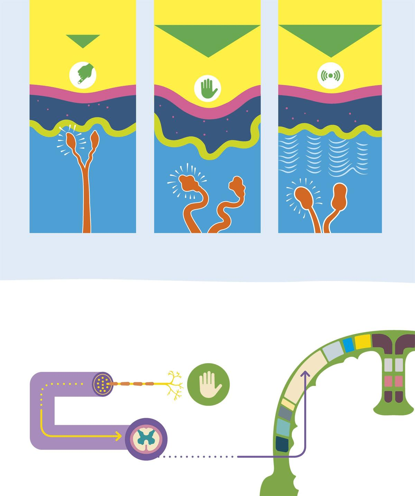
Thụ thể lớn, được che phủ ở đáy lớp trung bì
Tiểu thể Meissner Các thụ thể này thích ứng nhanh, nghĩa là chúng đáp ứng nhanh với kích thích nhưng ngừng phát tín hiệu nếu kích thích tiếp diễn. Điều này cho thông tin chính xác.
Đầu Ruffini Còn được gọi là tiểu thể hình bầu, những tế bào mềm, giống như viên nang này — nằm sâu trong lớp trung bì — đáp ứng khi da hoặc khớp bị kéo dãn hoặc biến dạng do áp lực.
Tiểu thể Pacini Loại thụ thể xúc giác sâu nhất và lớn nhất, những thụ thể cơ học tác động nhanh này đáp ứng với áp lực liên tục cũng như rung động.
Vỏ não cảm giác cơ thể
Bản đồ xúc giác Các vùng của cơ thể giàu thụ thể xúc giác, chẳng hạn như bàn tay, cần được xử lý nhiều hơn những vùng khác, nên chúng chiếm tỷ lệ lớn hơn của vỏ não cảm giác cơ thể.
Mọi thông tin từ thụ thể xúc giác đều được xử lý ở vỏ não cảm giác cơ thể. Vùng này nằm ngang qua đỉnh não như một dải tóc. Dữ liệu từ bên phải cơ thể đi sang bên trái não, và ngược lại. Mỗi bộ phận của cơ thể được ánh xạ tới một vùng riêng của vỏ não.
- CHẠM NHẸ
- RUNG ĐỘNG
- XOA BÓP MẠNH
- Thụ thể phình to, được bao bọc
- Các thụ thể chứa đầy dịch vươn vào lớp trung bì trên
- THÂN CHÂN
- ĐẦU
- CÁNH TAY
- BÀN TAY
- BÀN CHÂN
- SỢI TRỤC
- NGÓN CHÂN
- CƠ QUAN SINH DỤC
- MẮT MẶT
- Vỏ bao myelin
- Tín hiệu truyền qua bó dây thần kinh
- TAY PHẢI
- MÔI
- TỦY SỐNG
- LƯỠI
- BÊN TRÁI CỦA NÃO

Cơ thể có cảm giác riêng về vị trí của nó và cách nó di chuyển trong không gian. Quá trình này diễn ra gần như không có ý thức, khiến nó về bản chất là giác quan thứ sáu của cơ thể.
Các thụ thể co dãn trong da, cơ và khớp gửi thông tin về vị trí của các bộ phận cơ thể
Cảm giác vị trí cơ thể
Biết vị trí của mình Nhận thức về cơ thể đến từ sự kết hợp giữa cảm giác thân thể với các cảm giác khác: cảm giác lực, cảm giác nỗ lực hoặc trọng lượng, thị giác và thông tin từ các cơ quan giữ thăng bằng trong tai.
CỘT SỐNG
Bên trong cơ, gân và khớp là các thụ thể chuyển động gọi là thụ thể cảm giác thân thể (proprioceptors). Mỗi khi chúng ta di chuyển, các thụ thể này đo những thay đổi về chiều dài, sức căng và áp lực liên quan đến chuyển động đó và gửi xung động đến não. Thông tin được xử lý và một quyết định được đưa ra là dừng chuyển động hoặc đổi tư thế. Sau đó, thông điệp được chuyển ngược lại cho các cơ để thực hiện quyết định. Tất cả điều này xảy ra mà chúng ta không cần phải suy nghĩ về nó.
Thùy đỉnh
Tai trong gửi thông tin về sự xoay, gia tốc và trọng lực
Các dạng cảm giác thân thể
Hầu hết thông tin mà não nhận được về vị trí cơ thể được xử lý không có ý thức, chẳng hạn như cách chúng ta liên tục điều chỉnh tư thế cơ thể để giữ thăng bằng. Tuy nhiên, thông tin cảm giác thân thể có thể trở nên có ý thức nếu đòi hỏi chúng ta phải đưa ra quyết định — ví dụ, tinh chỉnh chuyển động cơ để thực hiện một động tác tự ý, điêu luyện.
Thùy đỉnh
Tín hiệu đầu vào từ các cảm biến áp lực và sức căng ở cánh tay
Tiểu não
Đường dẫn cảm giác thân thể Tín hiệu cảm giác thân thể có ý thức đi lên thân não đến đồi thị và kết thúc ở thùy đỉnh, vốn là một phần của vỏ não đại não. Đường không ý thức thì vòng lại tiểu não, vùng kiểm soát chuyển động.
- DÂY THẦN KINH NGOẠI BIÊN
- THẦN KINH NGOẠI BIÊN
- Cảm giác thân thể
- Tín hiệu thần kinh từ các thụ thể cảm giác thân thể
- Tín hiệu truyền dọc cột sống đến não
- Mắt gửi thông tin thị giác về vị trí
- Đồi thị
- Đường không ý thức
- Đường có ý thức

Các loại thụ thể cảm giác thân thể
Cơ thể chứa nhiều loại thụ thể cảm giác thân thể, và thông tin kết hợp từ các thụ thể này giúp não dựng nên bức tranh tổng thể về vị trí của cơ thể. Có ba loại chính: sợi thoi cơ (muscle spindle fibers) nằm trong cơ; cơ quan gân Golgi (Golgi tendon organs) nằm tại điểm nối giữa gân và cơ; và thụ thể khớp gắn vào các khớp. Các thụ thể đặc biệt trong da cũng có thể phát hiện sự co dãn (xem tr.83).
Xương
Cơ
Cơ quan gân Golgi cảm nhận sự thay đổi sức căng của cơ
Sợi thoi cơ
Dây thần kinh nhạy chạm Thụ thể dây chằng
Xương
Tín hiệu truyền lên sợi trục thần kinh
Dây chằng
Gân
Thụ thể khớp Các đầu dây thần kinh trong khớp phát hiện vị trí của khớp. Các thụ thể này giúp ngăn ngừa tổn thương do kéo dãn quá mức, đồng thời phát hiện vị trí trong chuyển động bình thường.
Thụ thể gân Các cơ quan gân Golgi nằm trong gân ở đầu các cơ. Chúng giám sát sức căng của cơ để đảm bảo chúng ta không kéo dãn cơ quá mức.
Thụ thể cơ Trong cơ có các cảm biến vị trí gọi là sợi thoi. Khi cơ dãn ra, các thoi gửi thông tin về vị trí của cơ đến não.
ẢO GIẢN PINOCCHIO
Não nghĩ tay đã di chuyển ra khỏi mặt Máy rung được bật
Đôi khi cảm giác thân thể có thể bị rối loạn, khiến cơ thể cảm thấy như có điều gì đó đang xảy ra nhưng thực tế không phải. Một hiệu ứng như vậy được gọi là ảo giản Pinocchio. Một máy rung được gắn vào cơ bắp tay của một người. Nếu người đó giữ mũi trong khi máy rung bật lên, cô ấy sẽ cảm thấy như cánh tay mình đang di chuyển ra khỏi mũi. Điều này xảy ra vì máy rung kích thích các sợi thoi cơ trong cơ bắp tay theo cách giống như khi cơ bị kéo dãn. Vì các ngón tay vẫn còn chạm vào mũi, nên cảm giác là mũi như đang dài ra khỏi mặt.
Máy rung
Trong lúc kích thích Các rung động báo cho não rằng cánh tay đang di chuyển, tạo ra cảm giác mũi đang dài ra phía trước.
Trước khi kích thích Khi nghỉ ngơi, não biết rằng các ngón tay đang chạm vào mũi, nhưng cánh tay không hề di chuyển.
- CHỨC NĂNG NÃO VÀ CÁC GIÁC QUAN
- Xương
- Cơ
- Cơ quan gân Golgi cảm nhận sự thay đổi sức căng của cơ
- Sợi thoi cơ
- Dây thần kinh nhạy chạm Thụ thể dây chằng
- Tín hiệu truyền lên sợi trục thần kinh
- Dây chằng
- Tay chạm vào mũi
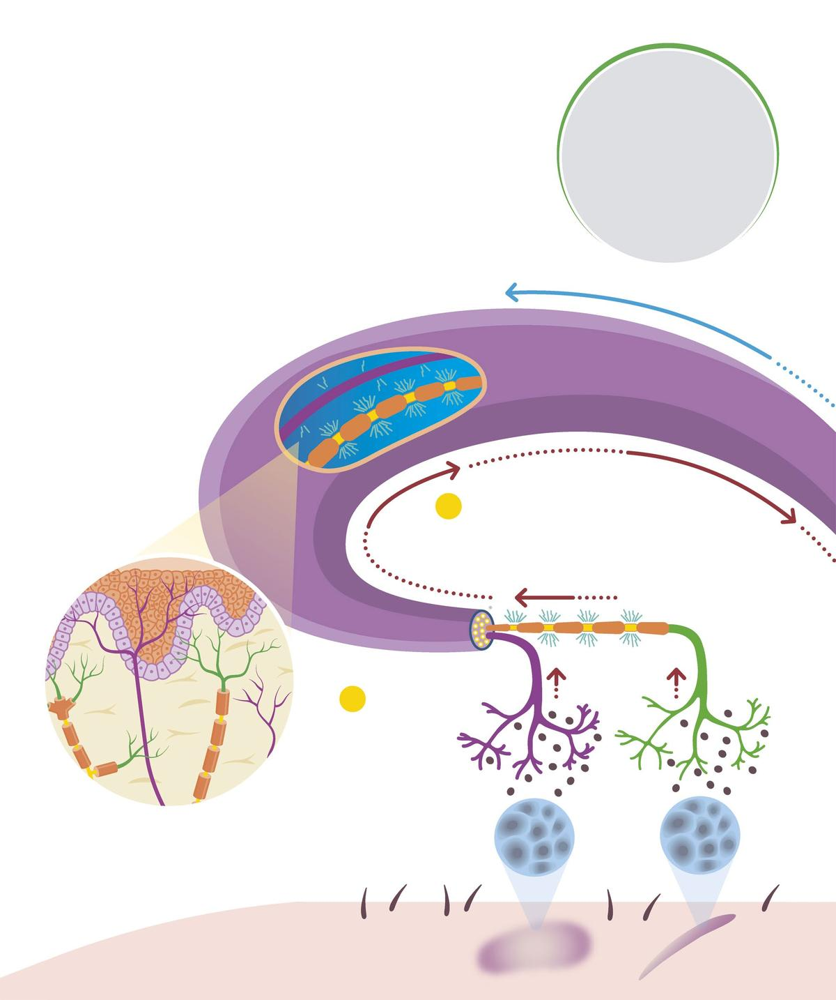
Dù khó chịu, đau là một tín hiệu cảnh báo hữu ích cho thấy có điều gì đó không ổn trong cơ thể và chúng ta cần hành động nhanh để tránh tổn thương thêm.
Phụ nữ cảm nhận đau dữ dội hơn nam giới vì họ có nhiều thụ thể thần kinh trong cơ thể hơn.
Tín hiệu đau
Các thụ thể đau nằm khắp cơ thể và đáp ứng với nóng, lạnh, kéo dãn quá mức, rung động và các hóa chất do vết thương giải phóng. Tín hiệu điện được gửi từ chỗ bị thương đến tủy sống, tại đây chúng vắt sang và đi đến phía não đối diện với bên bị thương. Nếu cảm nhận cơn đau đột ngột, dữ dội, một phản xạ sẽ xảy ra (xem tr.101) trong tủy sống để kéo chi tránh khỏi nguồn gây đau, thậm chí trước cả khi chúng ta kịp nhận biết.
Sợi C chậm
Bó dây thần kinh chứa nhiều sợi trục, hay sợi thần kinh
BÓ DÂY THẦN KINH
TÍN HIỆU ĐAU
Sợi A nhanh
Tín hiệu đau truyền lên các bó dây thần kinh Các tín hiệu từ chỗ bị thương truyền dọc theo
2
các bó dây thần kinh về phía tủy sống. Tín hiệu sợi A đến đó trong vài mili-giây và kích hoạt phản xạ rút lui khỏi nguồn gây đau.
1
Vết thương khiến các tế bào bị tổn thương giải phóng hóa chất gọi là prostaglandin. Những chất này kích thích sợi trục thần kinh gửi xung động đến não.
Phân tử prostaglandin do tế bào giải phóng
Sợi đau Có hai loại sợi thần kinh, hay sợi trục. Sợi A nhanh truyền cơn đau nhọn, khu trú từ vết thương như vết cắt. Sợi C chậm hơn truyền cảm giác âm ỉ kéo dài hơn từ vùng quanh vết thương.
- AI CẢM NHẬN ĐAU NHIỀU NHẤT?
- TÍN HIỆU TỦY SỐNG
- Bó dây thần kinh chứa nhiều sợi trục, hay sợi thần kinh
- BÓ DÂY THẦN KINH
- TÍN HIỆU ĐAU
- Các sợi C chậm phân bố rộng khắp da
- Sợi trục
- Tế bào thần kinh
- Thụ thể đau được kích hoạt
- Sợi A nhanh được bao phủ bởi vỏ myelin
- Tế bào bị tổn thương
- BẦM TÍM
- DA
- VẾT CẮT

CHỨC NĂNG NÃO VÀ CÁC GIÁC QUAN
Vỏ não trán đóng vai trò trong việc dự báo và kiểm soát cơn đau
Vỏ não cảm giác cơ thể xác định cường độ, vị trí và loại đau Hệ viền não chịu trách nhiệm về phản ứng cảm xúc và hành vi với cơn đau
GIẢM ĐAU TỰ NHIÊN
Cơ thể giải phóng chính hóa chất của mình, gọi là endorphin và enkephalin, để làm dịu các tín hiệu đau. Chúng liên kết với thụ thể trên các đầu dây thần kinh, ngăn không cho tín hiệu đau truyền tiếp.
Đồi thị chuyển tín hiệu đến các vùng khác nhau của não
Các sợi thần kinh đi xuống từ não chặn và điều chỉnh tín hiệu đau đi lên
Tín hiệu đau
Xử lý tín hiệu đau Tín hiệu tiếp tục đến đồi thị, nơi phân phối xung động đến vỏ não và các vùng khác chịu trách nhiệm về cảm xúc, sự chú ý và đánh giá mức độ quan trọng của cơn đau.
5
đi ngược xuống từ não để chặn các tín hiệu đau (xem ô bên phải). Những tín hiệu này kích thích thân não và tủy sống giải phóng các chất giảm đau tự nhiên làm giảm tín hiệu đau.
3
Bó dây thần kinh đi vào tủy sống qua sừng sau. Tín hiệu đau vắt sang phía bên kia của tủy sống để tiếp tục hành trình lên não.
Hầu hết các bó dây thần kinh đi vào phía sau cột sống, gọi là sừng sau
- Hệ lưới điều chỉnh tín hiệu đau
- Nơ-ron nhận tín hiệu
- Truyền tín hiệu
- Nơ-ron gửi tín hiệu
- 4
- TÍN HIỆU ĐAU ĐƯỢC TRUYỀN ĐI
- Endorphin chặn tín hiệu đau trước khi đến nơ-ron nhận
- Giảm nhẹ cơn đau Tín hiệu đi xuống
- Tín hiệu đau truyền lên tủy sống
- Tín hiệu tủy sống bỏ qua não
- TÍN HIỆU ĐAU BỊ CHẶN
- TỦY SỐNG
- SỪNG SAU
- Tín hiệu đau đến cột sống
Khi đang bị đau, cách xử lý thường thấy là dùng phương pháp điều trị y tế hoặc thuốc giảm đau. Tuy nhiên, chúng ta cũng có thể tự giúp kiểm soát cơn đau bằng cách điều chỉnh phản ứng tinh thần của mình—cả đối với cơn đau lẫn căng thẳng mà nó gây ra.
Đau là phản ứng mang tính cảm xúc cũng như thể chất trước một chấn thương hoặc bệnh tật. Sợ hãi tột độ hoặc anxiety (lo âu) là những phản ứng tức thì quan trọng, khiến bạn tránh né các nguồn gây đau bất cứ khi nào có thể. Đôi khi, tuy nhiên, cơn đau vẫn kéo dài ngay cả khi chấn thương hoặc bệnh tật không còn nữa. Cảm giác đau có thể trở nên liên kết với căng thẳng liên tục, với những ký ức khó chịu lặp đi lặp lại về nguyên nhân gây đau, hoặc với nỗi sợ thường trực rằng nó sẽ kéo dài hoặc tái phát. Những cảm xúc này có thể rất mạnh mẽ và gây bối rối. Dù bạn luôn nên tìm lời khuyên y tế nếu cơn đau nghiêm trọng hoặc kéo dài, bạn vẫn có thể dùng một số kỹ thuật để điều chỉnh nó bằng cách rèn luyện tâm trí của mình.
(các) tác dụng phụ, bao gồm loét dạ dày và bệnh gan. Cơ thể bạn cũng có thể tăng mức dung nạp đối với một loại thuốc, khiến bạn thu được ít lợi ích hơn từ thuốc theo thời gian.
một quả cầu năng lượng lớn bên ngoài cơ thể bạn, rồi “co nhỏ” nó trong tâm trí. Liệu pháp hành vi nhận thức (CBT) dùng một cách tiếp cận tương tự, bằng cách huấn luyện bạn thay thế những suy nghĩ tiêu cực như “Cơn đau này không thể chịu nổi,” hay “Tôi không thể ngăn được cơn đau này,” bằng những suy nghĩ tích cực như “Cơn đau này chỉ là tạm thời.” Tập chánh niệm giúp giảm căng thẳng, giúp bạn đối phó với cơn đau tốt hơn. Trong thực hành này — được điều chỉnh từ giáo lý Phật giáo — bạn chỉ cần thừa nhận cơn đau, thay vì để nó chi phối suy nghĩ của bạn hoặc làm bạn kiệt sức vì chủ động chống cự lại nó. Tóm lại, não bộ của bạn có thể là một công cụ mạnh mẽ để kiểm soát cơn đau nếu bạn: • Tập các kỹ thuật thư giãn và hít thở sâu để giảm mức căng thẳng. • Dùng các bài tập tinh thần để chuyển sự chú ý ra khỏi cơn đau. • Dùng các kỹ thuật CBT để tập trung vào suy nghĩ tích cực. • Tập chánh niệm.
Các Liệu Pháp Tâm - Thể
Ngoài thuốc men, bạn có thể dùng các kỹ thuật tâm - thể như thư giãn và hình dung để giảm hoặc giúp kiểm soát cơn đau — mà không có nguy cơ tác dụng phụ. Hầu hết các kỹ thuật này dùng sự thư giãn và hít thở sâu, có kiểm soát để giảm căng thẳng đi kèm với cơn đau và thường làm nó tệ hơn. Hãy thử nằm yên trong một căn phòng tối; hít vào thật sâu trong khi đếm đến 10, giữ hơi trong một lát, rồi thở ra chậm trong khi đếm đến 10. Tiếp tục điều này trong 10–20 phút. Việc chuyển sự chú ý thường làm giảm mức độ nghiêm trọng của cơn đau. Hãy thử chuyển sự chú ý ra khỏi vùng đau, thay vào đó tập trung vào một bộ phận không đau trên cơ thể bạn. Hoặc, hãy tưởng tượng cơn đau như
Vấn Đề Thuốc Giảm Đau
Dùng thuốc thường là cần thiết để kiểm soát cơn đau trong ngắn hạn, nhưng dùng thuốc giảm đau trong thời gian dài có thể dẫn đến các vấn đề như nghiện ngập hoặc các tác dụng phụ nghiêm trọng về thể chất
- Cách Dùng Não Bộ Để Kiểm Soát Cơn Đau

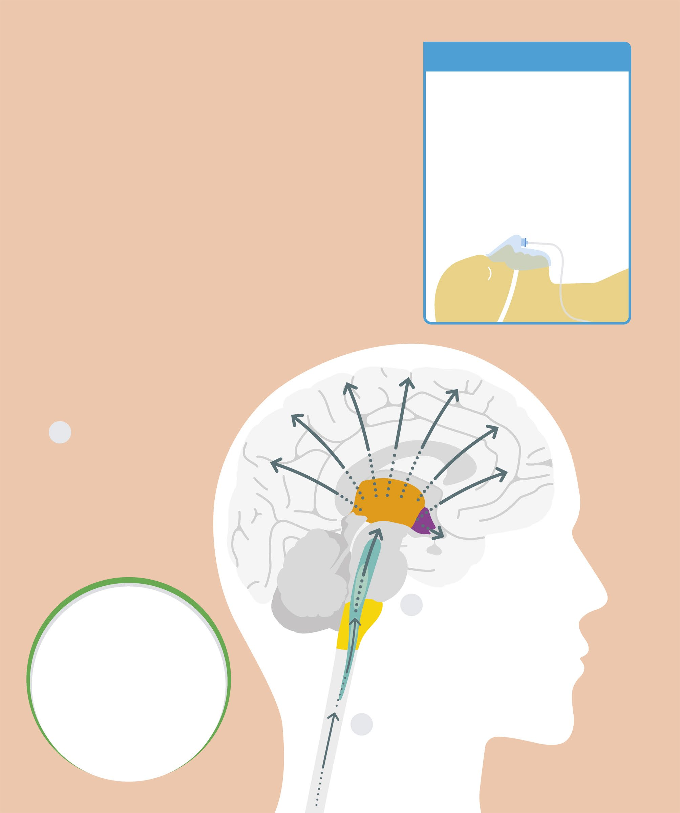
Hệ thống
Là một phần thiết yếu của phẫu thuật hiện đại, cách thức hoạt động của gây mê toàn thân vẫn chưa được hiểu đầy đủ. Điều đã biết là chúng tác động lên hệ thống kích hoạt lưới (gồm cấu trúc lưới và các kết nối của nó) để ức chế ý thức, và lên hippocampus (hải mã) để tạm thời đình chỉ việc hình thành trí nhớ. Thuốc mê cũng ảnh hưởng đến các nhân của thalamus (đồi thị), ngăn cản dòng thông tin cảm giác từ cơ thể truyền lên não.
Cơ thể người là một cộng đồng gồm 38 nghìn tỷ tế bào được tổ chức thành các hệ thống khác nhau. Giữ cho chúng hoạt động ở mức tốt nhất là một hệ thống các cơ chế phản hồi do não bộ kiểm soát.
Duy trì sự ổn định
Quá trình duy trì một môi trường nội bộ ổn định được gọi là homeostasis (cân bằng nội môi). Các chức năng then chốt như hô hấp, nhịp tim, độ pH, nhiệt độ và cân bằng ion phải được giữ trong những giới hạn hoạt động nghiêm ngặt để tránh chúng ta bị ốm. Khi cơ thể hoạt động, các hệ thống của nó liên tục bị đẩy ra khỏi điểm cân bằng hoặc điểm thiết lập (giá trị mà tại đó một hệ thống hoạt động tốt nhất). Khi sự thay đổi trở nên quá lớn, cơ thể sẽ khởi động một vòng phản hồi đưa hệ thống trở lại mức lý tưởng. Nhiều chức năng trong số này được điều khiển bởi một phần của brain stem (thân não) gọi là reticular formation (cấu trúc lưới).
3
đến đồi thị và vùng dưới đồi, cũng như đến các vùng thích hợp của vỏ não để đưa ra quyết định và phản ứng với kích thích.
Vùng dưới đồi điều hòa giấc ngủ, cảm giác đói và nhiệt độ cơ thể
ĐỒI THỊ
Vùng kích thích của cấu trúc lưới khuếch đại các tín hiệu quan trọng
2
A L L EDU các tín hiệu không mong muốn bị ức chế ở vùng ức chế, trong khi các tín hiệu khác được M khuếch đại ở vùng kích thích.
Cấu trúc lưới gồm hơn 100 nhân chiếu đến não trước, tiểu não và thân não, điều khiển nhiều chức năng sống còn của cơ thể.
Vùng ức chế của cấu trúc lưới làm dịu các tín hiệu không mong muốn
1
Các tín hiệu cảm giác đến từ khắp cơ thể truyền đến cấu trúc lưới.
- GÂY MÊ TOÀN THÂN
- Các tín hiệu truyền đến nhiều vùng của vỏ não
- Tín hiệu được chuyển tiếp Các tín hiệu sau đó được gửi trực tiếp
- Đồi thị chuyển tiếp tín hiệu cảm giác đến vỏ não
- Tín hiệu được xử lý Trong cấu trúc lưới,
- CÁI GÌ LÀ
- CẤU TRÚC LƯỚI?
- TỦY SỐNG
- Tín hiệu truyền lên cột sống
- Các xung động truyền lên tủy sống

CẢM BIẾN Các thụ thể căng giãn bị kích thích và gửi tín hiệu đến vùng dưới đồi.
KẾT QUẢ Em bé chào đời.
Hệ phản hồi dương Trong hai loại hệ phản hồi, hệ phản hồi dương ít phổ biến hơn và kém ổn định hơn, vì nó có khả năng tạo hiệu ứng dây chuyền lên các hệ khác, hình thành một quá trình “vượt tầm kiểm soát”. Một ví dụ về hệ phản hồi dương là sự tăng cường độ và tần số của các cơn co thắt khi sinh, những cơn co này dừng lại khi em bé chào đời và cổ tử cung không còn bị căng giãn nữa.
ĐIỀU KHIỂN Vùng dưới đồi kích thích tuyến yên sau, tuyến này giải phóng oxytocin.
Các vòng phản hồi
Các hệ sinh học vận hành theo cơ chế đầu vào và đầu ra, mỗi cái đều do một sự kiện nhất định gây ra và lại gây ra một sự kiện nhất định. Các vòng phản hồi hoặc khuếch đại đầu ra của một hệ (phản hồi dương), hoặc ức chế đầu ra của hệ đó (phản hồi âm). Các vòng phản hồi quan trọng vì chúng cho phép các sinh vật duy trì cân bằng nội môi.
CẢM BIẾN Các thụ thể nhiệt trong da cảm nhận sự thay đổi nhiệt độ này.
KẾT QUẢ Đạt được nhiệt độ cơ thể bình thường.
Hệ phản hồi âm Hầu hết các hệ dùng vòng phản hồi âm, vốn rất ổn định và có tác dụng đảo ngược chiều của sự thay đổi để đưa hệ trở lại trạng thái bình thường. Chúng bao gồm điều hòa đường huyết và nhiệt độ cơ thể.
ĐIỀU KHIỂN Vùng dưới đồi so sánh với điểm đặt nhiệt độ (98,6°F/ 37°C).
CƠ QUAN HIỆU ỨNG Nếu quá nóng, não sẽ gây ra đổ mồ hôi. Nếu quá lạnh, não sẽ khởi động run rẩy.
- CHỨC NĂNG NÃO VÀ CÁC GIÁC QUAN
- KÍCH THÍCH Thai nhi gây áp lực lên cổ tử cung.
- CƠ QUAN HIỆU ỨNG Oxytocin thúc đẩy nhiều cơn co thắt hơn.
- KÍCH THÍCH Nhiệt độ cơ thể thay đổi.
- 95˚F (35˚C)

Vùng dưới đồi — hypothalamus (US M A AL H OT YP H HE T DE SI IN).
và nhịp tim
Các nhân trong vùng dưới đồi Hầu hết các nhân đều có chức năng riêng biệt. Chúng tiết ra các hormone tác động lên tuyến yên, kích thích tuyến này sản xuất hormone giúp đạt được cân bằng nội môi ở bộ phận cần thiết của cơ thể.
NHÂN
Tham gia vào trí nhớ, sự hưng phấn, giấc ngủ và cân bằng năng lượng
VẬN NHÃN
“Đồng hồ” của cơ thể — điều khiển các nhịp sinh học ngày đêm
MẤT CÂN BẰNG
Khi cân bằng nội môi bị rối loạn, nó có thể dẫn đến bệnh tật, cũng như làm các tế bào của chúng ta hoạt động sai. Cơ thể nỗ lực sửa chữa vấn đề nhưng đôi khi lại làm nó tệ hơn, tùy vào yếu tố đang ảnh hưởng đến sự mất cân bằng. Di truyền, lối sống và độc tố đều có thể tác động đến cân bằng nội môi.
Duy trì cân bằng nội môi (xem tr.90) đòi hỏi não bộ và cơ thể phải trao đổi thông tin. Điều này được thực hiện nhờ các chất truyền tin hóa học gọi là hormone.
Vùng dưới đồi
Tại trung tâm của hệ cân bằng nội môi của não là hypothalamus (vùng dưới đồi) (xem tr.34). Nó chứa các cụm tế bào thần kinh, gọi là nhân, thực hiện những chức năng cụ thể, và có kết nối với hệ thần kinh tự chủ (xem tr.13), qua đó nó gửi tín hiệu để điều khiển nhịp tim, tiêu hóa và hô hấp. Khi vùng dưới đồi nhận tín hiệu từ hệ thần kinh, nó tiết ra các neurohormone, rồi đến lượt các chất này kích thích tuyến yên tiết hormone. Những hormone này tác động lên các cơ quan khắp cơ thể và thúc đẩy chúng tăng hoặc ức chế việc sản xuất hormone của chính mình.
- NHÂN CẬN NÃO THẤT
- Khởi phát việc nạp nước và thức ăn
- VÙNG DƯỚI ĐỒI LƯNG
- TIỀN THỊ GIÁC TRONG
- NHÂN DƯỚI ĐỒI SAU BÊN
- NHÂN LƯNG-TRONG
- NHÂN TIỀN THỊ GIÁC BÊN
- NHÂN TRƯỚC NHÂN BỤNG-TRONG
- VÙNG
- Ức chế ăn và giảm lượng thức ăn nạp vào
- NHÂN THỂ VÚ
- THỂ
- Điều khiển sự điều hòa nhiệt độ
- NHÂN TRÊN GIAO THỊ
- NHÂN TRÊN THỊ GIÁC
- CÁC NHÂN CỦ BÊN
- DÂY
- TUYẾN YÊN
- HORMONE ĐƯỢC SẢN XUẤT BỞI HỆ NỘI TIẾT
- Hệ Thần Kinh Nội Tiết
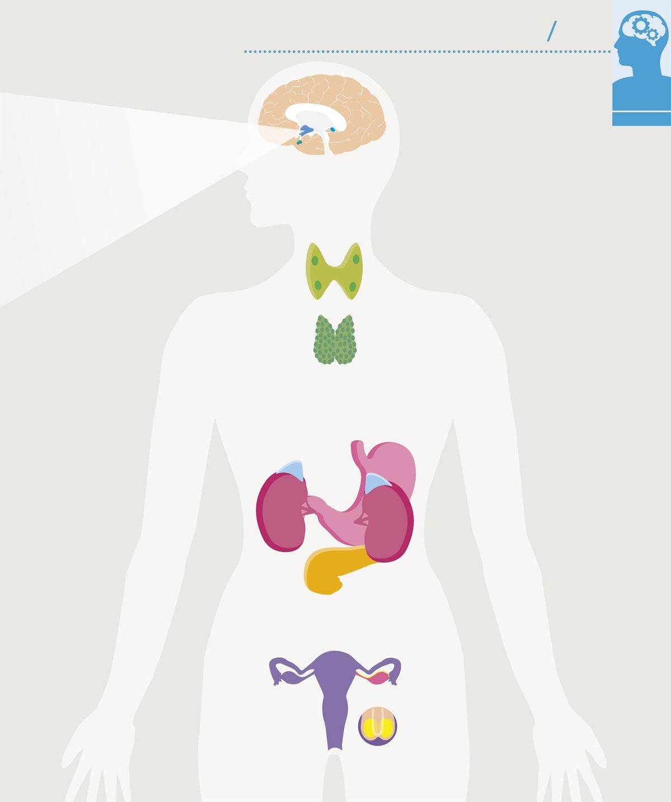
CHỨC NĂNG NÃO VÀ CÁC GIÁC QUAN
Nhà sản xuất hormone Hormone được dùng cho hai loại trao đổi thông tin. Loại thứ nhất là giữa hai tuyến nội tiết, trong đó một hormone được giải phóng để kích thích một tuyến đích thay đổi lượng hormone mà tuyến đó đang tiết ra. Loại thứ hai là giữa một tuyến và một cơ quan đích, chẳng hạn như việc tuyến tụy giải phóng insulin thúc đẩy các tế bào cơ hấp thụ glucose.
Vùng dưới đồi liên kết hệ thần kinh với hệ nội tiết
Tuyến tùng giải phóng melatonin để đáp ứng với mức độ ánh sáng — melatonin điều khiển nhịp sinh học ngày đêm của cơ thể và điều hòa một số hormone sinh sản.
Được vùng dưới đồi kiểm soát, tuyến yên đóng vai trò là “tuyến chủ”; nó tiết ra chính hormone của mình để điều khiển các tuyến khác.
Tuyến giáp và các tuyến cận giáp điều hòa sự trao đổi chất, mức calci trong máu và nhịp tim.
TUYẾN GIÁP
Sản xuất cortisol (điều hòa trao đổi chất, đáp ứng miễn dịch và chuyển đổi năng lượng), aldosterone (kiểm soát huyết áp và cân bằng muối), và adrenaline (hormone chiến đấu hay bỏ chạy).
Sản xuất các tế bào bạch cầu bảo vệ cơ thể chống lại virus và nhiễm trùng.
TUYẾN THỤC
Giải phóng hormone gây đói ghrelin và hormone gastrin, chất kích thích sản xuất axit.
Tiết renin và angiotensin, những chất kiểm soát huyết áp, cũng như erythropoietin, chất kích thích sản xuất hồng cầu.
DẠ DÀY
TUYẾN THƯỢNG THẬN
THẬN
Tiết insulin, glucagon và somatostatin để kiểm soát đường huyết; gastrin, chất kích thích tế bào dạ dày sản xuất axit; và một hormone kiểm soát sự tiết và hấp thụ nước trong ruột.
TUYẾN TỤY
Hệ nội tiết gồm các tuyến chuyên biệt tiết hormone, cũng như các cơ quan — chẳng hạn dạ dày — vốn không phải là tuyến nhưng vẫn có khả năng sản xuất, lưu trữ và giải phóng hormone. Cả hai loại đều phản ứng với tín hiệu từ não bằng cách tăng hoặc giảm sản xuất hormone; các hormone này sau đó đi theo dòng máu đến một cơ quan đích, nơi chúng khóa chặt vào các thụ thể chuyên biệt trên bề mặt tế bào. Điều này kích hoạt một thay đổi sinh lý khôi phục lại cân bằng nội môi.
Sản xuất các hormone sinh sản nữ là estrogen và progesterone, những chất chuẩn bị cho tử cung kỳ kinh nguyệt hoặc thai kỳ.
BUỒNG TRỨNG
Sản xuất testosterone, chất cần thiết cho việc sản xuất tinh trùng, duy trì khối cơ và sức mạnh, ham muốn tình dục và mật độ xương.
- TUYẾN CẬN GIÁP
- DẠ DÀY
- TUYẾN THƯỢNG THẬN
- THẬN
- Sản xuất hormone
- TINH HOÀN

5
Vùng dưới đồi đóng vai trò cơ quan điều hòa mức leptin và insulin tăng lên kích thích vùng dưới đồi sản xuất hormone melanocortin, khiến chúng ta cảm thấy no.
Thức ăn và thức uống là thiết yếu cho sự sống còn của con người. Các thúc đẩy từ hormone nhằm nạp dưỡng chất và nước được cơ thể trải nghiệm như đói và khát.
Mức ghrelin tăng báo cho vùng dưới đồi biết dạ dày đang trống
4
Mức insulin báo cho vùng dưới đồi biết cơ thể có đủ năng lượng hay không
Có hai loại đói. Đói do ham muốn (hedonic hunger) liên quan đến việc ăn uống — đặc biệt là các thực phẩm giàu chất béo, đường và muối — ngay cả khi chúng ta đã no, trong khi đói do cân bằng nội môi (xem bên phải) là phản ứng khi các kho dự trữ năng lượng của chúng ta cạn kiệt. Sau khi thức ăn đi qua dạ dày và ruột, dạ dày lúc này đã trống rỗng giải phóng một hormone gọi là ghrelin. Chất này tác động lên các nơ-ron trong vùng dưới đồi để báo cho chúng ta biết rằng mình đang đói, thúc đẩy chúng ta ăn. Sau đó, một hormone ức chế đói gọi là leptin được mô mỡ (mô chứa chất béo) giải phóng để ngăn chúng ta ăn quá mức.
Để ngăn chúng ta ăn quá mức, các tế bào mô mỡ giải phóng một hormone ức chế đói gọi là leptin, chất này đi đến vùng dưới đồi.
3
Mức leptin giảm báo cho vùng dưới đồi biết lượng năng lượng dự trữ thấp; mức leptin tăng giúp ức chế cảm giác thèm ăn.
ruột non giải phóng hormone incretin. Chất này, kết hợp với sự căng giãn của dạ dày và mức glucose trong máu tăng lên, khiến tuyến tụy giải phóng insulin.
2
Cảm thấy đói Não bộ, hệ tiêu hóa và các kho mỡ tạo thành một hệ thống liên kết chặt chẽ điều hòa cảm giác đói của chúng ta. Cảm giác đói có thể do các yếu tố bên trong gây ra, chẳng hạn dạ dày trống rỗng hoặc mức đường huyết giảm, hoặc do các tác nhân bên ngoài, chẳng hạn nhìn hoặc ngửi thấy thức ăn.
hướng dẫn vùng dưới đồi giải phóng một tín hiệu hóa học gọi là neuropeptide Y, chất kích thích cảm giác thèm ăn của chúng ta.
Các thụ thể căng giãn phát hiện sự mở rộng của dạ dày.
RUỘT NON
SỰ TẬP TRUNG VÀ MỨC ĐỘ LO ÂU
Tín hiệu dây thần kinh phế vị Chuyển động của thức ăn.
1
trong khoảng hai giờ, mức đường và insulin trong máu giảm. Điều này khiến dạ dày sản xuất hormone ghrelin.
- Cảm thấy no Những tín hiệu mà
- và Khát
- VÙNG DƯỚI ĐỒI (S U M A L A H T PO HY)
- Tín hiệu từ mô mỡ
- Đói
- Tín hiệu từ tuyến tụy Sau khi chúng ta đã ăn,
- Ham muốn ăn Mức ghrelin tăng lên
- Incretin do ruột sản xuất kích hoạt sản xuất insulin
- CHÚ THÍCH
- DẠ DÀY
- MÔ MỠ (CHỨA CHẤT BÉO)
- TUYẾN TỤY
- Tuyến tụy sản xuất insulin.
- Dạ dày trống Sau khi dạ dày đã trống
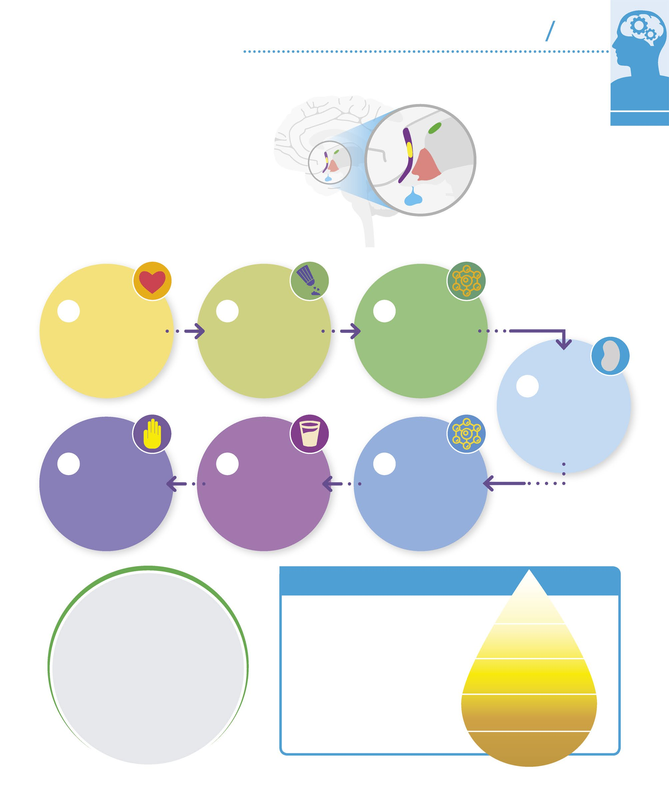
CHỨC NĂNG NÃO VÀ CÁC GIÁC QUAN
Lamina terminalis (LT) — màng tận cùng.
Organum vasculosum of the lamina terminalis (OVLT) — cơ quan mạch máu của màng tận cùng.
Khát
Khi lượng nước trong cơ thể giảm, mức muối trong máu tăng lên. Các vùng cảm nhận khát trong não phát hiện mức muối tăng và báo hiệu cho cơ thể tăng lượng nước bằng cách giảm lượng nước tiểu và nạp thêm chất lỏng. Sau khi uống, phải mất khoảng 15 phút trước khi nồng độ muối trong máu trở lại bình thường. Người ta cho rằng động tác nuốt ừng ực của cổ họng khi uống chất lỏng sẽ gửi tín hiệu ngăn việc uống thêm.
Subfornical organ (SFO) — cơ quan dưới màng nhện.
Các vùng cảm nhận khát trong não Hai cấu trúc, organum vasculosum of the lamina terminalis (OVLT) và subfornical organ (SFO) — cả hai đều liên kết với vùng dưới đồi — giúp tạo ra cảm giác khát. Chúng không có hàng rào máu não, nên được cho là có khả năng phát hiện mức muối trong máu.
Vùng dưới đồi.
3
sự giảm thể tích máu và tăng nồng độ muối. Chúng báo động cho não bộ.
nhận tín hiệu về thể tích máu và nồng độ muối. Chúng gửi tín hiệu đến vùng dưới đồi.
tín hiệu đến tuyến yên, rồi tuyến này sản xuất hormone chống bài niệu (ADH).
4
thận giữ lại nước và tiết renin. Đến lượt nó tạo thành hormone angiotensin II.
5
được kích hoạt bởi các động tác nuốt ừng ực ở cổ họng. Các nơ-ron này ngăn việc nạp thêm nước.
cảm giác khát, thúc đẩy ham muốn uống nhằm khôi phục mức nước.
và kích thích vùng dưới đồi thúc đẩy hình thành thêm ADH.
Các triệu chứng rõ rệt nhất của mất nước là miệng và mắt khô, và có thể là một cơn đau đầu nhẹ. Một cách nhận biết tốt khác là qua màu nước tiểu. Khi cơ thể đầy đủ nước, nước tiểu có màu vàng nhạt. Màu hổ phách sẫm hơn cho thấy mất nước nghiêm trọng. Người lớn nên nạp khoảng 3½–4 pint (2–2,5 lít) chất lỏng mỗi ngày.
Trung bình là ba đến bốn ngày nếu không có nước, nhưng trong một số trường hợp nhất định bạn có thể sống tới hai tháng mà không ăn.
- Tuyến yên.
- Các thụ thể ở tim và thận phát hiện
- SFO và OVLT cũng
- Vùng dưới đồi chuyển các tín hiệu này
- 1
- 2
- Mức ADH cao báo cho
- Các nơ-ron ức chế trong LT thì
- Vùng dưới đồi tạo ra
- SFO phát hiện angiotensin II
- 7
- 6
- BẠN CÓ ĐANG MẤT NƯỚC KHÔNG?
- RẤT ĐẦY ĐỦ NƯỚC
- ĐẦY ĐỦ NƯỚC
- MẤT NƯỚC VỪA PHẢI
- MẤT NƯỚC NHIỀU
- MẤT NƯỚC NGUY HIỂM

Putamen chuyển thông tin đã lưu trữ đến vỏ não đỉnh sau.
Vỏ não đỉnh sau nhận thông tin từ putamen và cũng đánh giá vị trí của cơ thể trong liên hệ với môi trường xung quanh.
ĐIỆN THẾ SẴN SÀNG
Khi chúng ta chuẩn bị cho một hành động tự nguyện, một sự tích tụ hoạt động điện, gọi là điện thế sẵn sàng, sẽ xuất hiện. Nó bắt đầu ở SMA và được tăng cường bởi hoạt động ở PMA. Hoạt động ở SMA bắt đầu trước tới 2 giây trước khi chúng ta ý thức được quyết định cử động của mình — điều này có thể cho thấy chúng ta kiểm soát hành động của mình kém hơn là chúng ta tưởng (xem tr.168).
PUTAMEN
Hoạt động ở SMA.
Thời điểm cử động thực tế.
Hoạt động ở PMA.
Hoạt động.
Thông tin cảm giác được gửi từ vỏ não thị giác qua đồi thị đến vỏ não trán lưng-bên.
gửi tín hiệu đến vỏ não trán. Putamen, nơi lưu trữ các hành động đã học, gửi thông tin đến vỏ não đỉnh, vùng đánh giá liệu những hành động đã học này có thể được dùng trong tình huống mới này hay không.
Các cử động có ý thức là những cử động mà chúng ta cố ý quyết định thực hiện. Chúng liên quan đến nhiều vùng của não và bao gồm cả những quá trình nằm ngoài nhận thức có ý thức của chúng ta.
SAO CHÚNG TA KHÔNG QUÊN CÁCH ĐẠP XE ĐẠP?
Có nhiều giai đoạn liên quan đến việc thực hiện một cử động — từ nhận biết ban đầu về môi trường, đến lập kế hoạch, rồi đến các điều chỉnh trong lúc cử động. Các giai đoạn này có sự tham gia của nhiều vùng não khác nhau cùng phối hợp để tạo ra một phản ứng. Vùng khởi phát cử động là vỏ não vận động. Các phần khác nhau của vỏ não vận động gửi tín hiệu đến các bộ phận khác nhau của cơ thể (xem tr.98). Tuy nhiên, trước khi một hành động bắt đầu, một kế hoạch hành động được tạo ra bởi vỏ não trán lưng-bên và vỏ não đỉnh sau, rồi đi qua hai vùng của vỏ não vận động: vùng vận động bổ sung (SMA) và vùng vận động tiền (PMA). Tiểu não điều phối cử động ngay khi nó đang diễn ra. Các bước ở trên cho thấy các vùng não tham gia và trình tự tín hiệu trong một cử động điển hình.
Các tế bào thần kinh trong putamen mã hóa trình tự các cử động cơ vào kho trí nhớ dài hạn của chúng ta, sao cho chúng dễ dàng được truy xuất ngay cả nhiều năm sau.
- VỎ NÃO TRÁN LƯNG-BÊN
- VỎ NÃO ĐỈNH SAU
- NỀN
- ĐỒI THỊ HẠCH NỀN VỎ NÃO THỊ GIÁC
- –1 Thời gian (giây).
- Thu thập thông tin Các vùng cảm giác, chẳng hạn vỏ não thị giác,
- 1
- TỦY SỐNG
- Lập Kế Hoạch Chuyển Động
- Quá trình lập kế hoạch
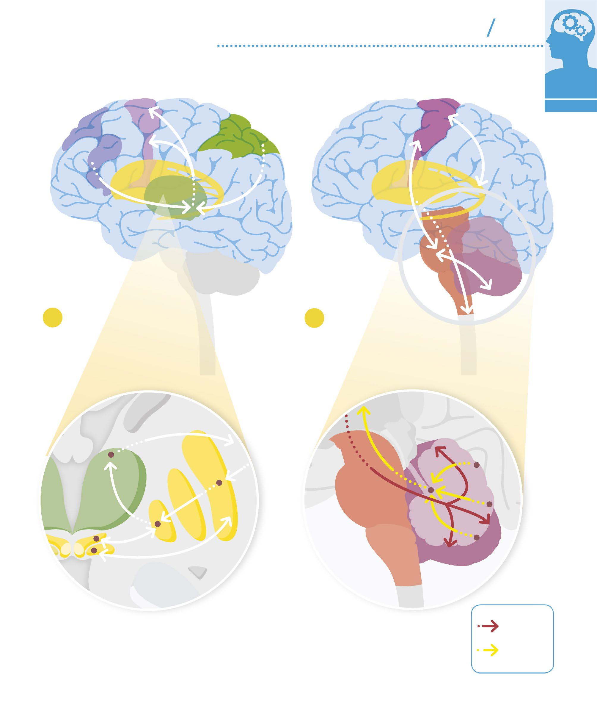
CHỨC NĂNG NÃO VÀ CÁC GIÁC QUAN
Vỏ não đỉnh sau gửi tín hiệu ý định cử động có ý thức qua hạch nền.
Vùng vận động chính có
Thân não chuyển thông tin trở lại vùng vận động chính sau khi thông tin đã được tinh chỉnh.
các liên kết mệnh lệnh - phản hồi với tiểu não và hạch nền.
PUTAMEN
Vỏ não trán lưng-bên gửi tín hiệu đến hạch nền.
THÂN NÃO
Mệnh lệnh hành động được gửi qua tủy sống đến các cơ.
Đồi thị chuyển tiếp tín hiệu từ hạch nền đến PMA và SMA.
Hạch nền tăng cường hoặc làm yếu tín hiệu.
Quyết định cách cử động Vỏ não trán lưng-bên
Chuẩn bị hành động Tín hiệu truyền đến vùng vận động chính
2
3
TỦY SỐNG
Thông tin được trao đổi giữa tiểu não và thân não.
và vỏ não đỉnh cùng phối hợp để lập kế hoạch cử động. Thông tin này được gửi qua hạch nền (xem tr.32–33) đến PMA và SMA, những vùng xác định trình tự co cơ cần thiết.
vận động chính, rồi vùng này chuyển tiếp chỉ thị đến tiểu não và thân não để tinh chỉnh. Tín hiệu từ các vùng này quay trở lại vùng vận động chính, và vùng này gửi tín hiệu hành động đến tủy sống.
Putamen nhận tín hiệu từ các vùng trán và đỉnh.
Nhân răng cưa thực hiện các điều chỉnh tinh tế đối với kế hoạch vận động.
Vỏ não trán (N O I T C E S S S O R C T N O R F).
Sau khi tín hiệu đã
Hướng tín hiệu (N O I T C E S S S O R E D SI).
được điều chỉnh, đồi thị chuyển tiếp đến PMA và SMA.
CẦU NHẠT
Chất đen kiểm soát cường độ của hành động.
Vỏ tiểu não (R A L L X E B E E T R R CE O C).
Vỏ tiểu não điều phối thời điểm.
Cầu nhạt ức chế các cử động không mong muốn. Nhân dưới đồi tham gia vào kiểm soát xung động.
CHÚ THÍCH
Điều chỉnh cử động Hạch nền là một nhóm nhân liên kết với đồi thị. Tín hiệu từ các vùng trán và đỉnh được xử lý bởi các mạch trong hạch nền, những mạch này khuếch đại hoặc ức chế tín hiệu vận động.
Thực hiện điều chỉnh Tín hiệu từ vùng vận động chính được gửi đến tiểu não, vùng đóng vai trò đo lường thời gian. Nó cũng thực hiện các điều chỉnh theo thời gian thực đối với cử động để đáp ứng với môi trường xung quanh.
Tín hiệu đến tiểu não.
- SMA
- VÙNG VẬN ĐỘNG CHÍNH
- VỎ NÃO TRÁN LƯNG-BÊN
- VỎ NÃO ĐỈNH SAU
- PMA
- HẠCH NỀN
- NỀN
- ĐỒI THỊ HẠCH NỀN
- TIỂU NÃO
- Quyết định cách cử động Vỏ não trán lưng-bên
- Chuẩn bị hành động Tín hiệu truyền đến vùng vận động chính
- 2
- 3
- TỦY SỐNG
- PUTAMEN
- ĐỒI THỊ
- THÂN NÃO
- NHÂN RĂNG CƯA
- Tín hiệu từ tiểu não.
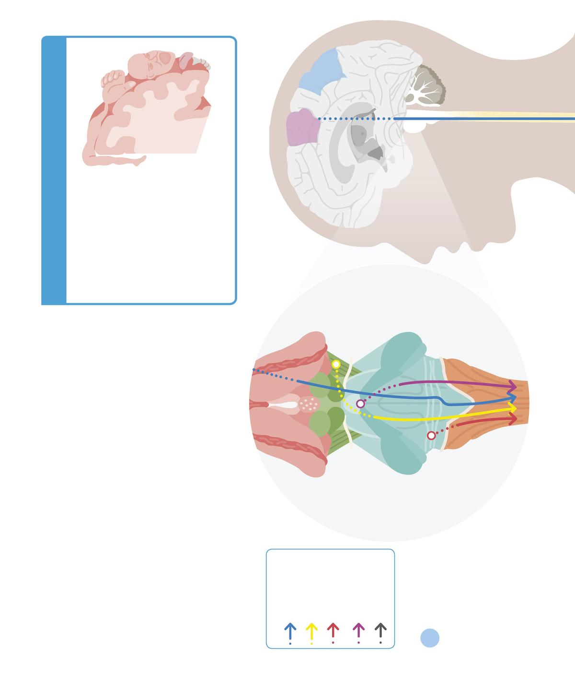
HOMUNCULUS VẬN ĐỘNG
Vùng vận động chính (A RE A R O T O M Y AR M I PR).
Các sợi trục tập trung ở não trung và nối với
Các nơ-ron từ não (nơ-ron vận động trên) truyền tín hiệu xuống tủy sống.
Hầu hết tín hiệu bắt nguồn từ vùng vận động chính.
những vùng tạo ra các cử động phức tạp được biểu diễn theo tỷ lệ; các bộ phận như mặt và bàn tay chiếm nhiều chỗ hơn trên vỏ não so với những vùng tạo cử động đơn giản, như bàn chân. Các vùng cho những bộ phận kề nhau thì được nhóm lại với nhau.
Vỏ não vận động kiểm soát vùng nào của cơ thể — chẳng hạn cánh tay và bàn tay — thường
Một homunculus vận động cho thấy chẳng hạn bàn chân.
Các sợi trục vượt sang phía đối diện của cơ thể ngay bên dưới thân não.
Bó vỏ-tủy bên
Bó vận động này hỗ trợ các cử động tinh tế. Bó đỏ-tủy bắt đầu ở vỏ não và chạy qua đồi thị.
Bó lưới-tủy giúp phối hợp cử động.
Sau khi não bộ đã lập kế hoạch cho một cử động (xem tr.96–97), nó gửi tín hiệu đến các cơ thích hợp trong cơ thể, qua hệ thần kinh, để biến ý định thành hành động.
phía đối diện của cơ thể. Các bó thần kinh khác bắt nguồn từ những phần khác của thân não, để sợi trục từ một bán cầu não kết nối với dây thần kinh vận động cho các nơ-ron trong tủy sống. Hầu hết sợi trục tạo thành một phần của bó gọi là bó vỏ-tủy bên, bó này vượt chéo ở đáy não để đi qua thân não và trao đổi với các nơ-ron vận động.
Tín hiệu từ các vùng vận động và đỉnh của vỏ não được gửi dọc theo
Thực Hiện Cử Động
của não trung và thực hiện các chức năng vận động cụ thể.
TỦY SỐNG
Bó tiền đình-tủy, bắt nguồn từ thân não, giúp điều hòa thăng bằng và hướng của cơ thể.
Các sợi trục vượt sang phía đối diện của cơ thể ở não trung.
BÓ TỦY
Cấu trúc lưới.
Từ Não Đến Tủy
các phản ứng không tự nguyện, chẳng hạn các cử động tự nguyện của chi. Các nhóm sợi trục khác đảm nhận các phản ứng không tự nguyện như thăng bằng, cũng như các cử động tinh chỉnh. Các bó thần kinh gửi tín hiệu đến những cơ nối với bộ xương để tạo ra cử động. Các sợi trục của bó vỏ-tủy bên
Bó đỏ-tủy. Bó tiền đình-tủy
Bó lưới-tủy bó.
bó.
CHÚ THÍCH
1
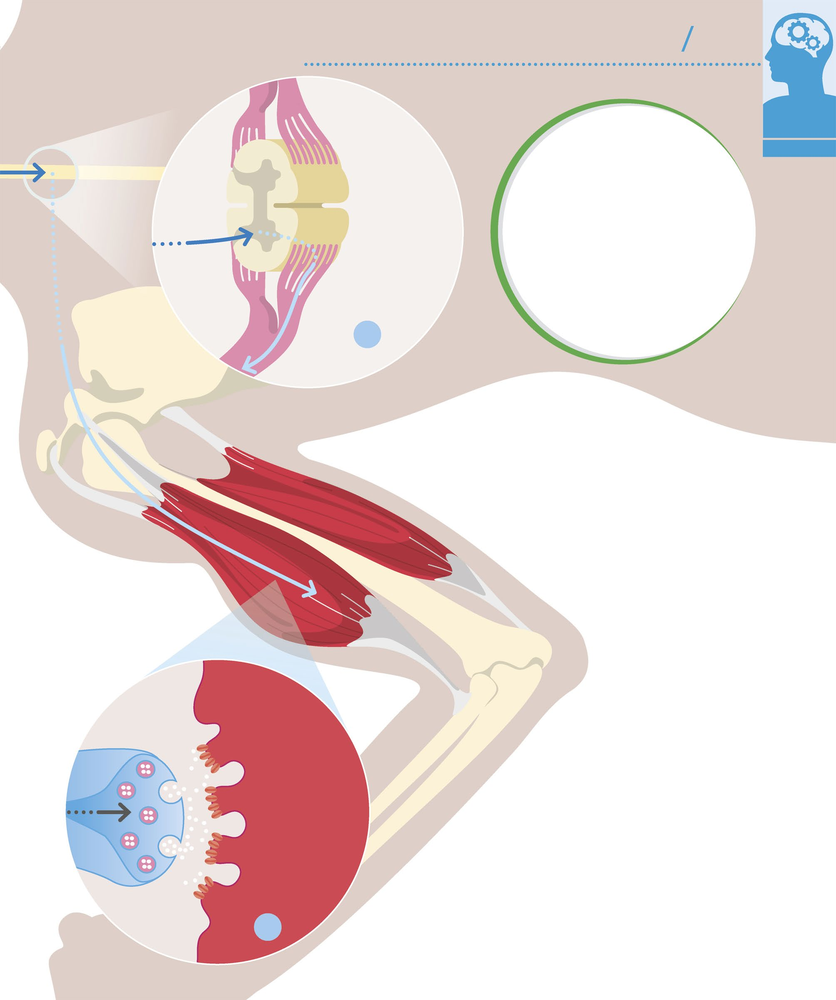
CHỨC NĂNG NÃO VÀ CÁC GIÁC QUAN
Tủy sống (D R O C L A N I P S).
Các nơ-ron vận động trên và dưới gặp nhau ở sừng bụng của tủy sống. Phần ngoài của sừng bụng chứa các dây thần kinh đi đến tay và chân; phần giữa chứa dây thần kinh đi đến cánh tay trên và đùi.
cơ với tốc độ lên tới 395 ft (120 m) mỗi giây từ não đến cơ thể chúng ta.
MỘT TÍN HIỆU MẤT BAO LÂU ĐỂ ĐI TỪ NÃO ĐẾN CƠ? Các tín hiệu có thể truyền
Các nơ-ron vận động trên.
SỪNG BỤNG
Các nơ-ron vận động dưới từ tủy sống đến cơ truyền tín hiệu từ
Các nơ-ron vận động dưới.
DÂY THẦN KINH QUAY
được bao phủ bằng bao myelin, tạo thành chất trắng. Chất xám ở trung tâm tủy sống gồm các thân tế bào của nơ-ron vận động. Bên trong tủy sống, các sợi trục của bó vỏ-tủy, vốn được bao bọc bởi bao myelin (myelin sheath), tạo nên chất trắng. Các đầu sợi trục vỏ-tủy (gọi là nơ-ron vận động trên) tạo khớp thần kinh với các nơ-ron vận động (gọi là nơ-ron vận động dưới) ở sừng bụng của chất xám. Các sợi trục của nơ-ron dưới thoát ra khỏi tủy ... các sợi cơ. Điểm mà các đầu dây thần kinh kích hoạt sợi cơ để cột sống qua các khe hở giữa các đốt sống (xem tr.12) và kéo dài đến sừng bụng của chất xám. Các sợi trục của nơ-ron dưới thoát ra và đi đến các sợi cơ. Điểm mà các đầu dây thần kinh kích hoạt sợi cơ để
CƠ
hoàn tất cử động được gọi là khớp thần kinh cơ.
Cơ co lại và làm khớp cử động, khiến cánh tay gập lại.
Khớp thần kinh cơ (N O I T C N U J R A L U C S U M O R U E N).
SỢI CƠ
Acetylcholine — chất dẫn truyền thần kinh.
neurotransmitter (chất dẫn truyền thần kinh) (xem tr.24). Acetylcholine gây ra các phản ứng tạo thành màng cơ. Điều này kích hoạt chất hóa học liên kết với các thụ thể trong tế bào cơ.
nhiều hơn những cơ dùng cho cử động đơn giản. Các cử động tinh tế có nhiều đầu dây thần kinh hơn.
Từ Tủy Đến Cơ
co lại và kéo vào khớp ngay bên cạnh nó. Những cơ dùng cho cử động tinh tế điều khiển bộ phận của chi.
KHE KHỚP THẦN KINH
Thực Hiện Cử Động
- CHỨC NĂNG NÃO VÀ CÁC GIÁC QUAN
- CHẤT XÁM
- các nơ-ron.
- CHẤT TRẮNG
- 2
- CÁNH TAY PHẢI
- Hướng của tín hiệu.
- sợi cơ co lại.
- Tín hiệu thần kinh khiến cơ
- SỢI TRỤC TẬN CÙNG
- Thụ thể cho acetylcholine.
- 3
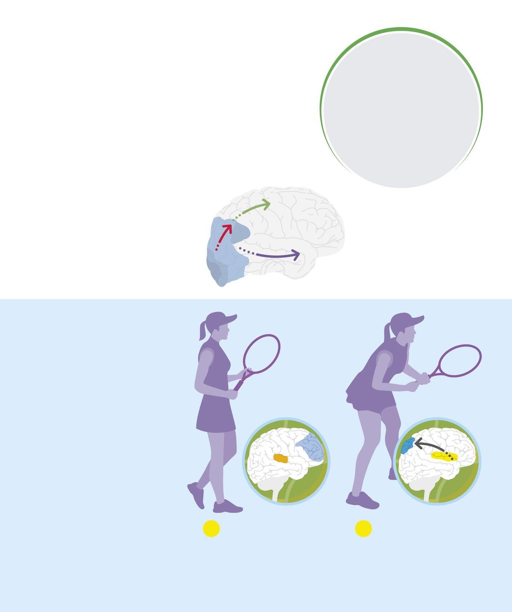
Khi chúng ta mệt mỏi, các nơ-ron trong não hoạt động chậm lại, ảnh hưởng đến tri giác thị giác và trí nhớ của chúng ta. Điều này có nghĩa là chúng ta phản ứng với các sự kiện chậm hơn.
Chúng ta thực hiện nhiều hành động tự nguyện mà không cần phải suy nghĩ về chúng vì chúng quá quen thuộc. Một loại vận động vô thức khác là phản xạ — một phản ứng bản năng trước nguy hiểm.
Đường phản ứng
Thông tin thị giác rất quan trọng trong việc giúp chúng ta lập kế hoạch cho các cử động của mình. Thông tin từ vỏ não thị giác đi theo hai đường trong não (xem tr.70–71). Đường phía trên (hay đường lưng), dẫn đến thùy đỉnh, hướng dẫn các hành động của chúng ta theo thời gian thực. Trong khi đó, đường phía dưới (hay đường bụng), kết thúc ở thùy thái dương, kích hoạt những trải nghiệm thị giác đã được lưu trữ để giúp chúng ta giải thích những gì mình thấy và phản ứng cho phù hợp.
ĐƯỜNG TRÊN (LƯNG)
Các đường thị giác trong não Đường lưng mang thông tin về vị trí của cơ thể và các vật thể khác, trong khi đường bụng dùng tri giác và trí nhớ để nhận dạng vật thể. Não dùng thông tin này để đánh giá lực và hướng cần thiết cho một cử động.
VỎ NÃO THỊ GIÁC
Sự chú ý tập trung vào những gì người chơi có thể thấy, chẳng hạn như người chơi đối phương
Hành động phối hợp
Bất kỳ chuỗi hành động nào cũng đòi hỏi sự phối hợp giữa các bộ phận khác nhau của não — trước tiên là tập trung sự chú ý vào nhiệm vụ, sau đó tích hợp thông tin cảm giác và trí nhớ để tạo ra một kế hoạch, rồi huy động vùng vận động để hành động. Việc học một kỹ năng mới, chẳng hạn như lái xe hoặc chơi một môn thể thao, bao gồm việc học và luyện tập các chuỗi vận động để chúng trở nên gần như vô thức. Khi chúng ta học một kỹ năng, các tế bào não tạo ra những kết nối mới. Vào thời điểm chúng ta đã thành thạo một kỹ năng (xem ô bên phải), hoạt động vỏ não liên quan đến việc thực hiện nhiệm vụ đó ít hơn nhiều so với lúc chúng ta còn là người mới bắt đầu. Kết quả là, các hành động của một người lành nghề — chẳng hạn như một tay vợt chuyên nghiệp — nhanh hơn, chính xác hơn và tinh tế hơn.
Thùy trán ức chế những ý nghĩ gây phân tán
Putamen lưu trữ các hành động đã học, chẳng hạn như cách trả bóng
2
đồi thị hướng sự chú ý đến khu vực nơi hoạt động sẽ diễn ra (chẳng hạn như người chơi đối phương), trong khi các thùy trán chặn những ý nghĩ gây phân tán để người chơi có thể tập trung vào các tín hiệu thị giác.
não thùy đỉnh gọi lại các ký ức về chuỗi hành động từ putamen. Vỏ não thùy đỉnh dùng thông tin này để đánh giá bối cảnh và tạo ra một mô hình nội tại cho hành động.
- Vận động
- ĐƯỜNG DƯỚI (BỤNG)
- Cơ thể chuẩn bị sẵn sàng để phản ứng
- Đồi thị tập trung sự chú ý vào đối phương
- THÙY TRÁN
- VỎ NÃO THÙY ĐỈNH PUTAMEN
- ĐỒI THỊ
- Chú ý — Để chuẩn bị cho hành động,
- Trí nhớ — Các tín hiệu thị giác kích hoạt vỏ
- 1

Phản xạ
Các nơ-ron trung gian bổ sung gửi tín hiệu đến não. Nơ-ron vận động gửi tín hiệu đến cơ để cơ co lại
CHÚ THÍCH
Phản xạ là những phản ứng trong tích tắc trước nguy hiểm mà chúng ta không cần học, thậm chí không cần suy nghĩ; cơ thể phản ứng tự động. Các hành động phản xạ dùng cùng những cơ được dùng trong vận động tự nguyện, nhưng phản ứng ban đầu, tức thì không liên quan đến não. Thay vào đó, tín hiệu từ các dây thần kinh cảm giác đi đến tủy sống, và tủy sống kích hoạt một phản ứng truyền dọc theo các dây thần kinh vận động. Các tín hiệu bổ sung được gửi đến não sau đó, để mã hóa trí nhớ phòng khi nguy hiểm lại tái diễn.
KÍCH THÍCH
Bỏ qua não Phản xạ liên quan đến một phản ứng thần kinh đơn giản gọi là cung phản xạ. Các thụ thể trong da và cơ gửi tín hiệu nguy hiểm dọc theo các nơ-ron cảm giác đến tủy sống; ở đó, các nơ-ron trung gian tạo khớp thần kinh với các nơ-ron vận động để kích hoạt một phản ứng nhanh.
PHÁT TRIỂN NĂNG LỰC
Bất kỳ ai học một kỹ năng mới cũng trải qua vài giai đoạn. Người mới bắt đầu phải nỗ lực rất nhiều để đạt được năng lực. Nhờ luyện tập, các đường dẫn thần kinh phát triển cho đến khi người học có thể làm tốt mà không cần suy nghĩ về điều đó.
Lập kế hoạch — Bộ não kết hợp thông tin thị giác theo thời gian thực
Sự không thành thạo vô thức
cùng các chương trình đã lưu trữ cho các chuỗi vận động để tạo ra một kế hoạch hành động. Kế hoạch này trước tiên được diễn tập ở vùng vận động tiền, rồi được gửi đến vỏ não vận động chính.
nhận ra mình đang hành động, chuỗi vận động đã tiến triển khá xa. Hành động rất có thể sẽ hiệu quả nếu người đó có đủ kỹ năng, kiến thức đã lưu trữ và thông tin.
Không nhận biết cần có kỹ năng và cũng thiếu sự thành thạo
- CHỨC NĂNG NÃO VÀ CÁC GIÁC QUAN
- Tín hiệu đến tủy sống
- Tín hiệu đến cơ
- Tín hiệu đến não
- 5
- TỦY SỐNG
- 4
- Các thụ thể trong da phát hiện nhiệt từ ngọn lửa
- 1
- 3
- CƠ
- 2
- Các nơ-ron cảm giác gửi tín hiệu đến tủy sống
- Các nơ-ron trung gian trong tủy sống tạo ra phản ứng
- Chuỗi vận động bắt đầu
- Quả bóng tiến về phía người chơi
- Vùng vận động chính lập kế hoạch và thực hiện cử động
- Năng lực vô thức
- Vùng vận động tiền lập kế hoạch cho cử động
- Thực hiện kỹ năng một cách tự động
- VỎ NÃO VẬN ĐỘNG
- Năng lực có ý thức
- Có thể dùng kỹ năng, nhưng chỉ khi nỗ lực
- VỎ NÃO THỊ GIÁC
- Sự không thành thạo có ý thức
- Nhận biết cần có kỹ năng nhưng còn thiếu sự thành thạo
- Hành động có ý thức — Vào thời điểm người chơi bắt đầu

Nơ-ron
Một số nhà khoa học cho rằng nơ-ron gương có thể đóng vai trò trong việc học cách bắt chước vận động. Theo giả thuyết này, thông tin về mục đích của một hành động được truyền đến các nơ-ron gương từ những vùng não như vỏ não tiền trán, vùng chịu trách nhiệm phân tích. Các nơ-ron gương ở nhiều vùng vận động sau đó mã hóa một mô phỏng của hành động đó, trở thành một phần trong chương trình vận động của chính chúng ta. Sau đó chúng ta có thể dùng “chương trình” này nếu cần tự mình thực hiện hành động ấy.
Việc học không chỉ bao gồm luyện tập một kỹ năng mới — chúng ta còn học bằng cách quan sát người khác. Kiểu học này được cho là liên quan đến các tế bào thần kinh trong não gọi là nơ-ron gương, cho phép chúng ta trải nghiệm các hành động mà không cần thực hiện chúng.
Quan sát một hành động Các nơ-ron gương phản ứng khác nhau với các hành động khác nhau của mặt và các chi. Đặc biệt, các nơ-ron ở những vùng não khác nhau được kích hoạt cho các cử động của chính cơ thể, chẳng hạn như nhai, và cho những cử động nhắm vào một vật thể nhìn thấy, chẳng hạn như cắn một quả trái cây.
Nơ-ron gương là gì?
Nơ-ron gương là các tế bào não bắn cả khi chúng ta thực hiện một hành động lẫn khi chúng ta thấy người khác thực hiện hành động đó. Chúng lần đầu được phát hiện ở khỉ, nhưng từ đó cũng đã được tìm thấy ở người. Hầu hết các nghiên cứu dùng chụp cộng hưởng từ chức năng (fMRI; xem tr.43), nhưng một nghiên cứu lại liên quan đến những người được cấy điện cực vào não. Trong trường hợp này, các tế bào nơ-ron gương được phát hiện ở vùng vận động bổ sung, nơi các chuỗi vận động được lập kế hoạch, cũng như ở hải mã, vùng quản lý trí nhớ và định hướng.
Nhiều vùng vận động được kích hoạt, bao gồm cả những vùng liên quan đến kiểm soát các cử động của miệng và hàm
NGƯỜI QUAN SÁT
Ở đâu? Nơ-ron gương đã được tìm thấy ở một số vùng vỏ não cũng như trong các cấu trúc sâu hơn bên trong não, chẳng hạn như hải mã.
Một phần thùy đỉnh được kích hoạt khi nhìn thấy hành động nhắm vào một vật thể
CHÚ THÍCH
Các phần của vùng vận động tiền và vùng Broca (vùng đóng vai trò trong việc hiểu cử động của người khác) được kích hoạt
- Phản chiếu vận động
- Vùng vận động tiền
- Vùng vận động chính
- Một phần của vùng Broca
- Vùng cảm giác cơ thể
- Vùng đỉnh dưới
- Hồi trán dưới
- Vùng vận động bổ sung
- NGƯỜI QUAN SÁT